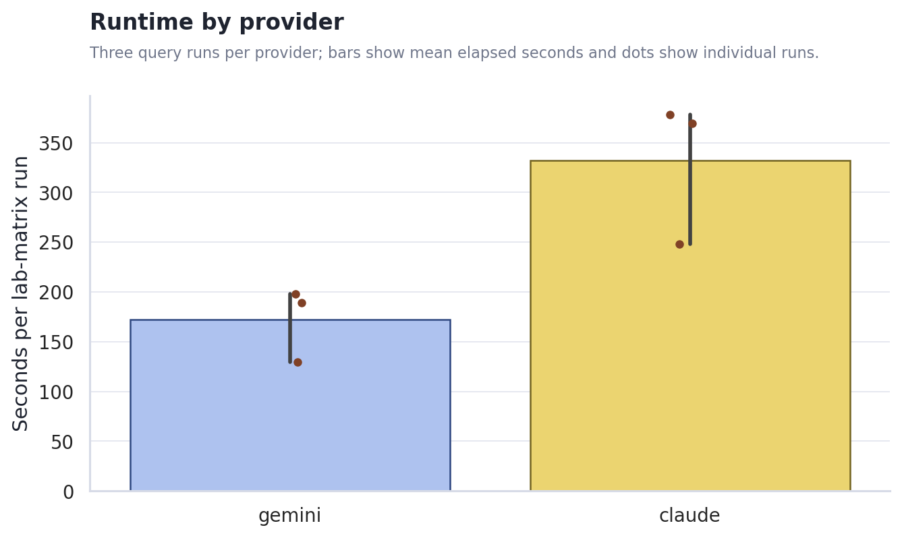
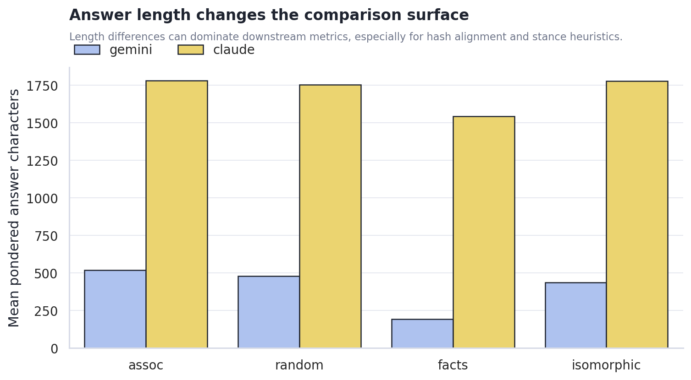
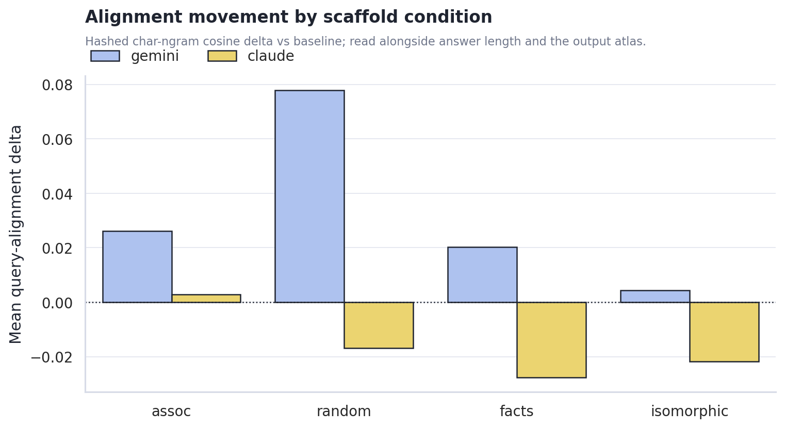
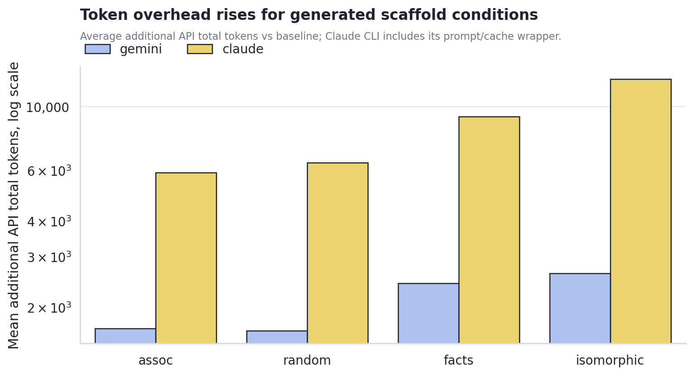
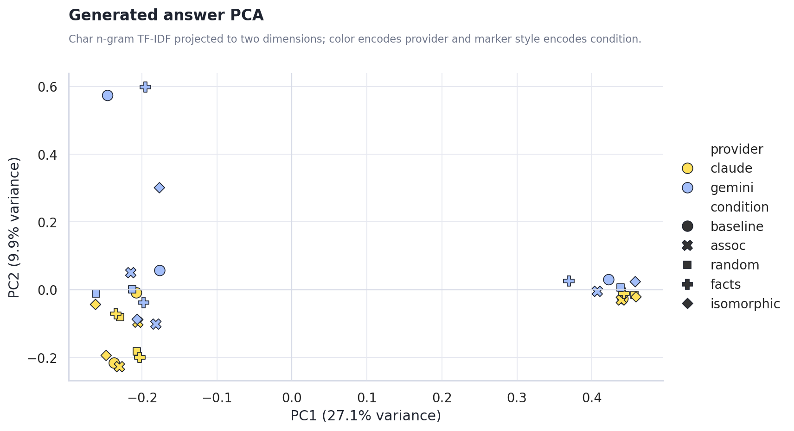

Claude/Gemini Pondering Machine Sweep
Generated 2026-06-18 02:14 from the local sweep artifacts.
Executive Summary
- 6 lab-matrix runs completed cleanly. The sweep produced 24 pondered comparison rows across gemini-3.1-pro-preview, opus, plus per-run JSON, trace, and matrix artifacts.
- Claude was much slower but produced fuller answers. Mean runtime was 331.8s for Claude versus 172.1s for Gemini, roughly 1.9x slower; Claude answers averaged 1,715 chars versus Gemini's 407.
- Alignment lift is a triage signal, not a verdict. Gemini's mean query-alignment delta was 0.032 versus Claude's -0.016; read that alongside answer length, PCA position, and the raw output atlas.
- Generated scaffold conditions are the expensive branch.
factsandisomorphicraised token overhead most strongly for both providers; Claude's CLI wrapper made the overhead about an order of magnitude larger than Gemini's direct OpenAI-compatible API path.
Runtime and answer length split provider behavior
Runtime separated clearly. Gemini and Claude are both usable for artifact sweeps, but their latency/cost surfaces differ enough that high-volume sampling and qualitative inspection should be planned separately.

The output-length gap shapes the first read. Stance, metaphor-density, and hash-alignment heuristics become easier to interpret when answer lengths are comparable; when they are not, the raw output atlas and PCA view matter more than a single scalar.

Scaffold condition changes the metric surface, but not all changes are meaningful yet
Alignment deltas moved by condition. The chart shows where each scaffold condition pulled answers closer to or farther from the original query surface. This should guide the next experiment design rather than be read as a final claim about model cognition.

Cost rises where the machine asks the model to synthesize a new scaffold. The plain associative and random controls are cheaper; facts and isomorphic require extra generation and larger final contexts.

Generated Content PCA
The PCA view treats each final answer as a document, hashes character n-gram TF-IDF features, and projects them into two dimensions. This is not semantic truth, but it is useful for spotting whether provider, prompt, or scaffold condition dominates the generated surface.

Provider centroid distance in PCA space: 0.190. Use answer_pca.csv for row-level inspection.
Recommended Next Steps
- Normalize answer-length targets before making provider claims. Require a minimum answer length, or stratify metrics by length band.
- Use the output atlas as the qualitative inspection lane. The charts show surface movement; the actual generated text shows whether the movement is meaningful.
- Add a small judge pass after the sweep shape is stable. The current hash alignment and PCA views are useful for triage, but they cannot say whether the pondered answer is actually better.
Actual Output Atlas
Each provider/query run below includes the full final answers stored in the result JSON, plus captured keywords, trace answer previews, and scaffold previews. Runs created after this report builder update can also include full ponder records inside each pack item.
non_relative_not_absolute
非相対的ではあるが絶対的ではない状態とは？
claude opus 378.4s
json / matrix / trace / stdout / stderr
baseline baseline | answer chars 1142
finish reasons: n/a
keywords: (none captured)
Trace answer preview
まず「相対的」と「絶対的」という二つの極を、それぞれ別の問いとしてほどいてみる。相対的とは、何かが必ず別の基準・視点・座標系との関係においてはじめて値を持つこと。観測者を変えれば変わる、立ち位置に依存する。一方で絶対的とは、いかなる基準にも、いかなる文脈にも、いかなる条件にも依存せず、それ自身で完結し、例外なく成り立つこと。 ここで気づくのは、この二つは正…
Final answer from result JSON
まず「相対的」と「絶対的」という二つの極を、それぞれ別の問いとしてほどいてみる。相対的とは、何かが必ず別の基準・視点・座標系との関係においてはじめて値を持つこと。観測者を変えれば変わる、立ち位置に依存する。一方で絶対的とは、いかなる基準にも、いかなる文脈にも、いかなる条件にも依存せず、それ自身で完結し、例外なく成り立つこと。 ここで気づくのは、この二つは正反対の対ではなく、別々の軸だということだ。「相対的でない」は「視点に依存しない・変わらない」という不変性を指す。「絶対的でない」は「無条件ではない・成立の地盤を持つ」という被制約性を指す。だから「非相対的かつ非絶対的」は矛盾ではなく、二つの軸が交わる第三の領域として存在しうる。 寄り道して具体例を探す。物理学の特殊相対論がきれいな模型を与えてくれる。空間の長さや時間の間隔は観測者ごとに伸び縮みする——相対的だ。しかし時空の「間隔」（インターバル）はどの慣性系から見ても同じ値をとる——不変、つまり非相対的。ところがその不変性は宇宙が特定の計量構造を持つという前提の上に乗っている。ニュートンが夢見た、何にも依存せず存在する「絶対空間・絶対時間」ではない。つまり、視点に依らないが、構造に依る。これがまさに非相対的だが絶対的でない状態だ。 数学に目を移しても同じ形が現れる。ある定理は、証明する人や言語に依存せず真である（非相対的）。だが、それはある公理系を選んだという条件のもとでの真理であって、公理を変えれば成り立たない。ユークリッドの平行線公準のように。だから無条件・絶対ではない。地盤の上での揺るがなさ、と言える。 存在の在り方としても読める。自分の価値を他人との比較や承認に委ねていない——非相対的。けれど永遠不変で完成された実体でもなく、なお生成し条件づけられている——非絶対的。関係に振り回されないが、無からの孤立でもない、地に足のついた過程的な自己。 これらに共通する形が見えてきた。鍵は「条件づけられた不変性（conditioned invariance）」だ。 非相対的ではあるが絶対的ではない状態とは、ある基準・視点・観測者を取り替えても値や真偽が動かないという意味で客観的・不変でありながら、その不変性自体が特定の地盤——構造・公理・文脈・関係の総体——の成立を前提として初めて妥当する、という状態である。視点に対しては独立だが、地盤に対しては依存している。言い換えれば、フレームの内側では揺るがず誰にとっても同一だが、フレームそのものが別でありえた可能性を排除できない。観測者の恣意は退けるが、世界の偶有性は背負ったまま立っている、不変だが無条件ではない、地盤の上の安定がそれにあたる。
assoc none | answer chars 1,337 | diff ratio 0.935 | alignment delta 0.001 | api total delta 5,551
finish reasons: end_turn
keywords: 相互依存的均衡, 文脈依存性, 関係論的位置づけ, 暫定的な定点, 観測者を含む座標系, 間主観的な妥当性
Full ponder record 1
ponder_q: 「相互依存的均衡」と「文脈依存性」を夢の合図だと思って。夢はどう展開する？ ponder_log: - 相互依存的均衡、という言葉を合図にすると、夢はまず「誰も先に動けない部屋」から始まる気がする - 全員が互いの足元を見ていて、最初の一歩が誰かの一歩を前提にしている——でも本当に均衡なのか、ただの硬直の言い換えかもしれない - ナッシュ均衡を思い出しかけて、いや、夢の中の均衡は数式じゃなくて、潮の満ち引きみたいに「合っている」だけだと打ち消す - 文脈依存性のほうは、同じ赤い扉が右から見ると出口、左から見ると入口になる廊下として現れる - 比喩がずれる：扉ではなく、言葉の意味が部屋ごとに更新されていく図書館かもしれない - すると均衡と文脈が手を組んで、「意味は誰かの解釈に依存し、その解釈も誰かに依存する」という入れ子の渦になる - ここで反例が浮かぶ——孤島で一人きりの夢なら、相互依存も文脈もないのでは？ - いや、過去の自分という他者がいる、と仮定すれば成り立つ。でもその仮定はすぐ揺らぐ - 翻って、均衡は静止画で、文脈は時間軸、と分けたくなるが、夢では時間も誰かの視線で伸び縮みする - 連想：生態系。捕食者と被食者の均衡が、季節という文脈で別の意味になる——でも夢は生態系ほど律儀じゃない - 展開の方向が定まらない。むしろ「展開しないこと」自体が相互依存の帰結なのかもしれないと疑う - 最後に、合図そのものが文脈に依存していて、目覚めた瞬間に意味を失う——その消え方だけが残像として漂う
Scaffold preview 1
[2026-06-17T16:55:21Z] run:641cf5c9852ef0aa band:single hop:0 ix:0 mode:assoc keywords: 相互依存的均衡, 文脈依存性, 関係論的位置づけ, 暫定的な定点, 観測者を含む座標系, 間主観的な妥当性 ponder_q: 「相互依存的均衡」と「文脈依存性」を夢の合図だと思って。…
Trace answer preview
相対的とは「視点ごとにバラバラで、誰の立場かを言わなければ何も言えない」状態を指し、絶対的とは「いかなる視点からも、いかなる条件のもとでも、無条件に同じく成り立つ」状態を指す。この問いが探しているのは、その両端のどちらでもない中間の領域だ。 非相対的ではあるが絶対的ではない状態とは、要するに「複数の視点をまたいで共有される妥当性を持つが、なお有限の条件に支…
Final answer from result JSON
相対的とは「視点ごとにバラバラで、誰の立場かを言わなければ何も言えない」状態を指し、絶対的とは「いかなる視点からも、いかなる条件のもとでも、無条件に同じく成り立つ」状態を指す。この問いが探しているのは、その両端のどちらでもない中間の領域だ。 非相対的ではあるが絶対的ではない状態とは、要するに「複数の視点をまたいで共有される妥当性を持つが、なお有限の条件に支えられている」状態のことだと言える。それは「人による」では片づかない——だから相対的ではない。けれど「いつでもどこでも無条件に」でもない——だから絶対的でもない。 具体的に言い換えると、いくつかの相が重なっている。 第一に、間主観的な妥当性。私一人の感じ方には還元できず、立場を異にする観測者のあいだで突き合わせても崩れない。けれどその一致は、共有された前提・言語・測定の枠の内側で成り立っているもので、その枠ごと変われば手触りを変える。科学的な事実が典型で、観測者を選ばない頑健さを持ちながら、なお改訂可能で暫定的だ。 第二に、文脈依存的だが文脈の内では確定している、という二重性。条件を固定すれば答えは一意に定まる(だから恣意ではない)。しかし条件そのものが座標系として効いていて、座標を取り替えれば別の確定値になる。Ponder Logの「同じ語でも条件が変わると別の手触りを持つ」がこれにあたる。値は確かにあるが、座標抜きの裸の値ではない。 第三に、観測者を含む座標系における定点。観測者を消去した「どこからでもない眺め」(view from nowhere)に立てるなら絶対的になるが、それはできない。観測者は必ず系の内側にいる。それでも、その系の内側で動かない基準点は立てられる。これが「暫定的な定点」だ——揺らぎの只中で、いまここでは動かないと合意できる軸。 均衡という比喩がここで効く。Ponder Logの「相互依存的均衡」は、誰の一歩も他者の一歩を前提にしながら、全体としては崩れない配置を描いていた。これは絶対的な土台の上に固定されているのではない。互いを支え合うことで成立している。支えの一つが抜ければ位置はずれる。けれど、いまその構成のもとでは確かに「合っている」。潮の満ち引きが、絶対的な高さではなく月と地形との関係のなかで、それでもその瞬間には一意の水位を持つように。 だから一言にすれば—— 非相対的ではあるが絶対的ではない状態とは、共有可能で(私の気分には還元されない)、条件づけられていて(無条件ではない)、改訂に開かれている(永遠ではない)妥当性の在りようである。視点に汚染されていない真理ではなく、複数の視点が突き合わせのなかで仮に支え合って立てた定点。客観性と恣意のあいだにある「間主観的・状況内的に確定した」ものだと言える。 数学の定理のような無条件の真理ではなく、かといって好みの問題でもない。倫理的な規範、ある共同体を実際に拘束しながら歴史のなかで書き換わっていく規則、あるいは「この前提のもとでは正しい」と限定詞つきで主張される命題——これらが住んでいる領域である。絶対性を手放しても恣意に堕ちないための、ちょうどよい強度の妥当性、と言ってもいい。
random none | answer chars 1,253 | diff ratio 0.942 | alignment delta -0.061 | api total delta 6,747
finish reasons: end_turn
keywords: 観測者依存, 文脈拘束性, 間主観性, 相互参照系, 準安定状態, 条件付き不変量
Full ponder record 1
ponder_q: 「観測者依存」と「文脈拘束性」を夢の合図だと思って。夢はどう展開する？ ponder_log: - 観測者依存——見るたびに床の傾きが変わる回廊、と言えばそれっぽいが、では「見ない」とき床は平らなのか、いや平らという言葉すら観測の残り香だろう - 文脈拘束性は、夢の中で誰かが「これは図書館だ」と言った瞬間、天井が本棚に固まっていく、あの不可逆な凝結に似ている - でも逆もある——名前を与えたとたん溶ける部屋、呼べば呼ぶほど輪郭を失う水たまりとしての文脈 - 比喩がもう揺らいでいる。拘束は枠なのか、枠が外れる速度のことなのか - 仮に観測者が二人いたら、夢は二枚に裂けるのか、それとも縫い目だけが残って中身が両方とも消えるのか - 反例めいたものが浮かぶ：誰も見ていない夢の中の引き出し。開けられるのを待たずに、すでに整頓されている気配だけがある - 連想で言えば、シュレディンガーより先に、廊下の鏡が「まだあなたを映していない」とつぶやく方が夢らしい - 文脈が拘束だとして、その鎖は外側にあるのか、夢を見る側の喉の奥にあるのか——たぶん場所を問うこと自体が罠 - 仮定を一度ひっくり返してみる：観測が依存しているのではなく、依存そのものが観測の別名だったら、夢は鏡を二枚立てるだけで無限に展開する - 展開、という語が早すぎた。夢は展開しないのかもしれない、ただ「さっきもこうだった」という嘘の記憶を増やしていくだけで - たとえば、合図を待っていた手のひらに、合図ではなく合図の重さだけが残る、というような - ここで床がまた傾く。誰が見たからでもなく、書いている指が観測者に化けたから、という疑いがよぎる - 拘束が緩むと夢が終わるのか、終わると拘束が緩んだことになるのか、その順序が湯気のように立ちのぼって読めない - まだ結論には触らない。触れば本棚に固まってしまう天井のことを、さっき言ったばかりなので
Scaffold preview 1
- 駅前で、レシートの端だけが妙に丁寧に折られている。雨どいだけが規則正しい。 - 誰も急いでいないのに、美術館のロビーの空気だけが少し先へ進んでいる。紙コップは置き去りのままだ。 - 結び目を合図にしても何も始まらず、代わりに水筒のふたの位置だけが静かにずれていく。 - 美術館のロビーの隅では、説明にならない小さな手順だけが増えていき、紙コップはそのたびに…
Trace answer preview
それは「自分のうちで成り立っているが、すべてに通用するわけではない」状態だと思う。 整理すると、「相対的」とは関係に依存して初めて成り立つこと――AはBと比べて初めて「大きい」になり、比較の相手を取り去れば性質そのものが消える。基準・観測者・対立項という外部の枠があって、はじめて意味が定まる。 一方「絶対的」とは、どんな関係からも独立しているだけでなく、…
Final answer from result JSON
それは「自分のうちで成り立っているが、すべてに通用するわけではない」状態だと思う。 整理すると、「相対的」とは関係に依存して初めて成り立つこと――AはBと比べて初めて「大きい」になり、比較の相手を取り去れば性質そのものが消える。基準・観測者・対立項という外部の枠があって、はじめて意味が定まる。 一方「絶対的」とは、どんな関係からも独立しているだけでなく、無条件・例外なし・どこでもいつでも・全体を貫く、ということを含む。土台として他のすべてを支え、揺るがない。 この二つのあいだに、確かに空白がある。比較によって生じたのではない、それ自体で立っている――その意味で非相対的なのに、無条件でも普遍でも永続でもない、という状態だ。自律しているが、君臨はしていない。 具体的に言うと、いくつかの相が当てはまる。 ひとつは、直接に与えられた「質」。痛みや、赤さの感じは、「何かと比べて痛い／赤い」という比較から構成されてはいない。ただそのものとして現れる。だから非相対的だ。けれど痛みは過ぎ去り、私のものであり、宇宙の法則ではない。例外なく全体を貫くわけではないから、絶対ではない。 もうひとつは、「局所的な秩序」。Ponder Log の、レシートの端だけが妙に丁寧に折られている、雨どいだけが規則正しい――あれがまさにそれだ。その折り目はどこかの規範と照らし合わせて正しいのではない。それ自体で完結した、内的に整った手順がそこにある。だから相対的ではない。しかしその規則は「ここ」でしか効いておらず、ほかへ広がる根拠も、いつまでも続く保証もない。説明にならない小さな手順だけが増え、紙コップは毎回別の役を持つ――秩序はあるのに普遍化を拒む。これが非相対的・非絶対の典型だ。 三つめは、「今」という時間。生きられた現在は、「過去と比べての今」ではなく、唯一現実であるものとして絶対的に立ち会われる。その瞬間には比較相手がいない。だから相対的ではない。だが現在は絶え間なくずり落ちていき、固定できず、有限だ。水筒のふたの位置だけが静かにずれていくように。掴んだ途端にもう別の今になっている。だから絶対でもない。 つまり共通の構造はこうだ――それ自身に根拠をもち（非相対的）、しかし偶然的・有限・局所的であって、無条件の普遍性をもたない（非絶対的）。比較に還元されない「ただ、そうである（こうなっている）」というあり方でありながら、「いつでもどこでも必ずそうである」とは言わない。 哲学の言葉を借りれば、それは個物の「このもの性（haecceity）」、現象学的な所与、あるいは「事実としての偶然性」に近い。事は事として揺るがずそこにあるが、別様でもありえた――その二重性こそが、非相対でありながら絶対でない状態の核心だ。 要するに、関係なしに自立しているのに、無条件ではないもの。比較を超えていながら、永遠でも普遍でもないもの。自足した、しかし限りのある「現にこうある」――それがその状態だ。
facts none | answer chars 780 | diff ratio 0.955 | alignment delta -0.051 | api total delta 8,440
finish reasons: end_turn
keywords: 相互依存, 関係性のなかの位置, 可変的な基準, 暫定的な座標, 文脈に縛られた固定点, 比較を超えた個別性
Full ponder record 1
ponder_q: 「相互依存」と「関係性のなかの位置」を夢の合図だと思って。夢はどう展開する？ ponder_log: - 相互依存という言葉を握ったまま眠ると、まず糸が見える。けれど糸なのか、それとも糸と呼びたかった水なのか曖昧だ - 二人で立っていると思ったら、片方が壁で、壁がいつの間にか床になっていて、位置という言葉がほどけていく - 蔓植物を連想する。支柱に巻きつくのか、支柱が蔓に支えられているのか、夢のなかでは順番が逆さに揺れる - いや、蔓ではなく、互いの影を踏み合うダンスかもしれない。踏まれた影が痛がる - 「関係性のなかの位置」と唱えると、座席表が配られる。でも椅子は全部後ろを向いていて、誰の隣かわからない - 反例として、孤島がひとつ浮かんでくる。誰にも依存していないはずなのに、波が島の形を毎晩決め直している - もし位置が固定だと仮定したら——と考えた瞬間、足元の地図が折り紙になって鶴に変わる - 鶴は飛ぶが、片翼を誰かに預けている。預けた相手が見えないので、空が傾く - 潮の満ち引きの比喩に戻りたくなる。満ちるとき、海は岸に依存しているのか、岸が海に名前をもらっているのか - ふと、相互依存とは「同時に転びそうになる」状態のことかもしれない、という仮定が浮かんで、すぐ霧になる - 位置を確かめようと振り返ると、さっきまで自分がいた場所に、別の誰かの後頭部がある - 糸の話に戻る。けれど今度は誰も糸を持っていなくて、糸だけが空中で形を保っている - 夢はここで分岐したがる。一方では網になり、一方では一本の線に戻ろうとして、決めかねている
Scaffold preview 1
- 「相対的」とは、ある値や妥当性が観点・基準系・主体・文脈に依存して変化する性質を指す - 「絶対的」とは、いかなる観点・条件にも依存せず、無条件かつ例外なく成立する性質を指す - 「非相対的」は相対性の否定であり、観点間で変動しないことを意味するが、無条件性までは含意しない - したがって「非相対的かつ非絶対的」とは、観点に依存せず一定だが、なお何らかの…
Trace answer preview
それは、誰がどの立場から見ても評価が一致するという意味で観点に依存しないが、その一致がある前提・領域・背景条件の上ではじめて成り立っている、という状態を指します。言い換えれば「主体や基準系を超えて一定」でありながら「無条件・例外不可ではない」もの——条件付きの普遍性を持つ状態です。 二つの軸で位置づけると整理しやすくなります。一方の軸は観点依存性（相対的か…
Final answer from result JSON
それは、誰がどの立場から見ても評価が一致するという意味で観点に依存しないが、その一致がある前提・領域・背景条件の上ではじめて成り立っている、という状態を指します。言い換えれば「主体や基準系を超えて一定」でありながら「無条件・例外不可ではない」もの——条件付きの普遍性を持つ状態です。 二つの軸で位置づけると整理しやすくなります。一方の軸は観点依存性（相対的か非相対的か）、もう一方の軸は無条件性・例外不可性（絶対的か否か）で、この二軸は互いに独立しています。問われている状態は、前者の軸では「非相対的（観点を変えても揺るがない）」に振れ、後者の軸では「非絶対的（成立に条件を要し、例外がありうる）」に振れている、その交点に位置します。 具体的なイメージとしては次のようなものがあります。ある公理系のもとで証明された定理は、誰が検証しても同じ結論に至る点で観点に依存しませんが、その妥当性は採用された公理の上に乗っており、公理を変えれば成り立たなくなる点で絶対的ではありません。物理法則も、どの観測者から見ても同じ形をとる（非相対的・不変）にもかかわらず、適用範囲や近似の前提という条件の内側でのみ妥当であり、領域を外れれば破れうる点で絶対的ではありません。社会的なルールや測定の基準なども、共同体の内部では誰にとっても同一に通用する一方、その共同体や制度という背景条件に依拠している、という同種の構造を持ちます。 要点は、「観点を超えた一致（=非相対性）」と「条件からの独立（=絶対性）」を混同しないことです。観点に依存しないことは、ただちに無条件であることを意味しません。前提が共有されている限りで誰にとっても同じように成り立つ——その「前提が共有されている限りで」という限定が残っているとき、その状態は非相対的でありながら絶対的ではない、と言えます。
isomorphic none | answer chars 844 | diff ratio 0.954 | alignment delta -0.039 | api total delta 12,140
finish reasons: end_turn
keywords: 観測者依存, 文脈束縛性, 間主観的妥当, 相対座標系の固定点, 条件付き恒常, 準安定な参照枠
Full ponder record 1
ponder_q: 「観測者依存」と「文脈束縛性」を夢の合図だと思って。夢はどう展開する？ ponder_log: - 観測者依存——見られて初めて色がつく、という言い分を夢の入口に置いてみる - たとえば部屋の壁紙が、振り向くまで決まっていない、量子的な遅延みたいに - でも逆に、振り向かなくても誰かが見ているなら？ 夢の中の他人は観測者なのか、それとも背景なのか - 文脈束縛性は、その「他人」が急に名前を変えても誰も驚かない規則のことかもしれない - 母だった人が次の場面で見知らぬ駅員になる、けれど文脈は途切れず連続している、と感じる - 連続している、という感覚そのものが束縛なのでは、と疑い始める - 反例——明晰夢では観測者が舞台装置を握り返す、すると依存の矢印が反転する - 矢印が反転した瞬間、夢は壊れるのか、それとも別の文脈に乗り換えるだけなのか - 比喩を変えてみる。夢は辞書で、引くたびに語義が前後のページを読み替えてしまう - 同じ単語を二度引けない、というのが文脈束縛の意地悪なところ - 仮に観測をやめたら？ 見ない夢は展開しないのか、それとも勝手に進んで朝に残骸だけ届くのか - 残骸という言い方が既に観測者の事後解釈で、夢自身は残骸を知らないだろう - ふと、覚めた後にこのログを読む私もまた、文脈に縛られた一人の観測者にすぎない - 矢印はどこを向いているのか、まだ宙づりのまま
Scaffold preview 1
- 潮汐——月に引かれて初めて輪郭が動く、という言い分を渚の入口に置いてみる - たとえば砂州の形が、次の満ち引きまで決まっていない、堆積の遅延みたいに - でも逆に、潮が引かなくても波が形を覚えているなら？ 海の記憶は刻み手なのか、それとも器なのか - 海岸線の縁取りは、その「波」が急に角度を変えても誰も測り直さない目盛りのことかもしれない - 昨日の汀線…
Trace answer preview
それは、よりどころを外から借りてもいないが、外から永久に与えられてもいない状態のことだと思う。 相対的とは「何か別のものと比べて初めて位置が決まる」こと、絶対的とは「何とも関係せず、どんな視点からも同じく動かない」こと。この二つの間に、第三の様式がある——基準を自分の内側で、しかも一回きりではなく刻々と作り直しながら保つ、というあり方だ。 渚を思い浮かべ…
Final answer from result JSON
それは、よりどころを外から借りてもいないが、外から永久に与えられてもいない状態のことだと思う。 相対的とは「何か別のものと比べて初めて位置が決まる」こと、絶対的とは「何とも関係せず、どんな視点からも同じく動かない」こと。この二つの間に、第三の様式がある——基準を自分の内側で、しかも一回きりではなく刻々と作り直しながら保つ、というあり方だ。 渚を思い浮かべるといい。汀線は座標に釘で打たれているわけではない（だから絶対的ではない）。かといって、ただ波や月との関係に解け去ってしまうのでもない（だから単に相対的でもない）。昨日の砂が今朝には見知らぬ岩礁を縁取っていても、「渚が続いている」という事実そのものが目盛りになっている。つまり、続けるという行為が、外部の物差しを参照せずに自前の基準を生み出している。これが非相対的だ——他と比べて決まるのではなく、自分の持続が自分の規準になっている。だが同時に、その規準は固定された一枚の床ではなく、満ち引きごとに描き直される。だから絶対的でもない。 大潮で堆積の矢印が逆を向く瞬間、その状態は崩れない。崩れる代わりに、別の基準面へ乗り換える。ここが肝心で、絶対的なものなら一つの基準面に縛られて、それが崩れれば全部崩れる。相対的なだけのものなら、参照先が消えた途端に意味を失う。非相対的だが絶対的でない状態は、基準面を取り替えても自己同一性を保てる。乗り換えること自体が、その状態の続き方なのだ。 言い換えれば、これは外的座標に依らない内在的な規準を持ち、しかもその規準が過程として更新され続けるもの——動的平衡、自己維持するパターン、渦や定常波のように、素材が流れ去っても形が残る種類の安定だ。海の記憶が器でも刻み手でもなく、波が形を覚えていく運動そのものであるように。 ひとつの基準で測りきれるわけではないが、測りそのものを毎瞬自分で立て直している。だから動いていても見失われない。それが、非相対的でありながら絶対的ではない状態だ。
gemini gemini-3.1-pro-preview 189.1s
json / matrix / trace / stdout / stderr
baseline baseline | answer chars 126
finish reasons: n/a
keywords: (none captured)
Trace answer preview
言葉の前提を疑うところから、少し思考を歩かせてみます。私たちは通常、「相対的」と「絶対的」を対義語として、コインの裏表のように捉えがちです。相対的とは、他との比較や関係性によってその性質や価値が定まること。対して絶対的とは、他に依存せず、それ自体で普遍
Final answer from result JSON
言葉の前提を疑うところから、少し思考を歩かせてみます。私たちは通常、「相対的」と「絶対的」を対義語として、コインの裏表のように捉えがちです。相対的とは、他との比較や関係性によってその性質や価値が定まること。対して絶対的とは、他に依存せず、それ自体で普遍
assoc none | answer chars 146 | diff ratio 0.875 | alignment delta 0.007 | api total delta 1,669
finish reasons: length
keywords: 境界領域, 量子重ね合わせ
Full ponder record 1
ponder_q: 「境界領域」と「量子重ね合わせ」を夢の合図だと思って。夢はどう展開する？ ponder_log: - 昼と夜の境界である黄昏時、空が青でも赤でもない「両方」である瞬間が、夢への入り口になるのだろうか。
Scaffold preview 1
[2026-06-17T16:46:15Z] run:830ea3c16e79b21e band:single hop:0 ix:0 mode:assoc keywords: 境界領域, 量子重ね合わせ ponder_q: 「境界領域」と「量子重ね合わせ」を夢の合図だと思って。夢はどう展開する？ ponder_log: - 昼と夜の境界である黄昏時、空が青で…
Trace answer preview
昼と夜の境界である黄昏時は、昼の明るさや夜の暗さと比較されることで成り立つ相対的なものではなく、ただ「空が青でも赤でもない両方である」という独自の瞬間としてそこに存在します。しかし、それは永遠に続く不変の真理ではなく、時間が経てば移ろうため絶対的なものでもありません。このような境界領域や、観
Final answer from result JSON
昼と夜の境界である黄昏時は、昼の明るさや夜の暗さと比較されることで成り立つ相対的なものではなく、ただ「空が青でも赤でもない両方である」という独自の瞬間としてそこに存在します。しかし、それは永遠に続く不変の真理ではなく、時間が経てば移ろうため絶対的なものでもありません。このような境界領域や、観
random none | answer chars 591 | diff ratio 0.919 | alignment delta 0.145 | api total delta 1,378
finish reasons: length, stop
keywords: json
Full ponder record 1
ponder_q: 「json」と「Emptiness」を夢の合図だと思って。夢はどう展開する？
ponder_log:
- 夢の中でふと開いた本や看板の文字が `{"key": "value"}` のような構造に置き換わっていたら、それは夢の合図かもしれない。Scaffold preview 1
- 駅前で、レシートの端だけが妙に丁寧に折られている。雨どいだけが規則正しい。 - 誰も急いでいないのに、美術館のロビーの空気だけが少し先へ進んでいる。紙コップは置き去りのままだ。 - 結び目を合図にしても何も始まらず、代わりに水筒のふたの位置だけが静かにずれていく。 - 美術館のロビーの隅では、説明にならない小さな手順だけが増えていき、紙コップはそのたびに…
Trace answer preview
駅前で妙に丁寧に折られているレシートの端や、美術館のロビーに置き去りにされた紙コップ。それらは、他の何かと比較してその形を保っているわけではありません。周囲の環境との関係において「より美しい」とか「より意味がある」といった相対的な評価の網目からは抜け落ちています。しかし同時に、それが宇宙の真理のように永遠不変であるわけでも、いかなる条件にも縛られない絶対的な…
Final answer from result JSON
駅前で妙に丁寧に折られているレシートの端や、美術館のロビーに置き去りにされた紙コップ。それらは、他の何かと比較してその形を保っているわけではありません。周囲の環境との関係において「より美しい」とか「より意味がある」といった相対的な評価の網目からは抜け落ちています。しかし同時に、それが宇宙の真理のように永遠不変であるわけでも、いかなる条件にも縛られない絶対的な存在であるわけでもありません。ただその瞬間、その場所で、それ自身の小さな論理によって完結してそこにあるだけです。 このような情景を思い浮かべると、非相対的ではあるが絶対的ではない状態の輪郭が自然と浮かび上がってきます。 何かと比べることで価値や意味が決まる相対的な文脈から切り離され、それ自体で独立して成立している。しかし、すべての制約を超越した永遠不変の絶対的なものでもなく、やがては風に飛ばされたり、誰かに片付けられたりする有限なものである。 つまりその状態とは、他者や外部の基準に依存せずに自己完結していながらも、普遍性や永遠性を持たない「局所的な固有性」を指します。特定の時間と空間の中でのみ一意に存在する、一過性でありながらも独立したあり方です。比較されることも、永遠を約束されることもなく、ただその瞬間にそのように存在しているという完結した有限性こそが、非相対的でありながら絶対的ではない状態の正体です。
facts none | answer chars 125 | diff ratio 0.681 | alignment delta 0.007 | api total delta 2,384
finish reasons: length
keywords: と絶対
Full ponder record 1
ponder_q: 「と絶対」と「Emptiness」を夢の合図だと思って。夢はどう展開する？ ponder_log: - 「と絶対」という言葉の尻尾だけが、壊れたレコードのようにリフレインしている空間。 - なぜ「絶対」の前に「と」が張り付いている
Scaffold preview 1
- 「相対的」とは、対象の性質や価値が他者との比較や観測者の視点、外部の - 「非相対的ではあるが絶対的ではない状態とは」という主題では、定義と適用範囲を混同しないことが重要である。 - 用語の意味が揺れる場合は、どの水準の主張かを分けて記述する必要がある。 - 問いを成立条件と不成立条件に分けると、射程が見えやすくなる。 - 「非相対的ではあるが絶対的では…
Trace answer preview
「相対的」と「絶対的」という言葉の定義について思索を巡らせてみる。相対的とは、対象の性質や価値が他者との比較や外部の基準、観測者の視点に依存して決まる状態を指す。したがって「非相対的」とは、他との比較や関係性に依存せず、それ自体で性質が定まっている自
Final answer from result JSON
「相対的」と「絶対的」という言葉の定義について思索を巡らせてみる。相対的とは、対象の性質や価値が他者との比較や外部の基準、観測者の視点に依存して決まる状態を指す。したがって「非相対的」とは、他との比較や関係性に依存せず、それ自体で性質が定まっている自
isomorphic none | answer chars 135 | diff ratio 0.801 | alignment delta 0.004 | api total delta 2,686
finish reasons: length
keywords: 相対的ではない
Full ponder record 1
ponder_q: 「相対的ではない」と「Emptiness」を夢の合図だと思って。夢はどう展開する？ ponder_log: - 「相対的ではない」ということは、大きい・小さい、明・暗という比較の定規がドロドロに溶けることだろうか。 - もし定規が完全に溶け落ちたら、夢の中のリンゴは「ただ在る」だけの絶対的な質量を持つのか、概念ごと消えるのか。 - そこで「Emptiness」が合図だとしたら、それは空っぽの部屋なのか、それとも水が満ちる直前の透明な器なのか。 - いや、器すらない「空（くう）」だとしたら、私という観測者すらも夢の背景に溶け込んでしまうかもしれない。 - 観測者がいない夢は、果たして「展開する」という時間軸や物語の起伏を持ち得るのだろうか。 - 例えば、音符が一つも書かれて
Scaffold preview 1
・枯れる、乾く・潤うという季節の周期が静かに崩れ去ることだろうか。 - - 温室では、光が少し遅れて届く。意味ではなく配置だけが反復されている。 - 温室では、光が少し遅れて届く。意味ではなく配置だけが反復されている。 - 温室では、光が少し遅れて届く。意味ではなく配置だけが反復されている。 - 温室では、光が少し遅れて届く。意味ではなく配置だけが反復されて…
Trace answer preview
相対的であるとは、他者や周囲の環境との比較や関係性のなかに意味を見出すことである。枯れることと潤うことの対比のように、自然の周期はまさに相対的な変化の連続だ。しかし、その関係性が静かに崩れ去り、外部との繋がりが断たれた空間を想像してみる。たとえば、外界から切り離された温
Final answer from result JSON
相対的であるとは、他者や周囲の環境との比較や関係性のなかに意味を見出すことである。枯れることと潤うことの対比のように、自然の周期はまさに相対的な変化の連続だ。しかし、その関係性が静かに崩れ去り、外部との繋がりが断たれた空間を想像してみる。たとえば、外界から切り離された温
reality_interface
現実って何のインターフェース？
claude opus 369.1s
json / matrix / trace / stdout / stderr
baseline baseline | answer chars 1768
finish reasons: n/a
keywords: (none captured)
Trace answer preview
インターフェースという言葉を真に受けてみる。インターフェースとは、複雑すぎて直接触れられない何かと、それを扱う側とのあいだに置かれた、薄い変換層のことだ。デスクトップのアイコンはファイルシステムの実体ではないし、ハンドルは内燃機関の爆発そのものではない。インターフェースは常に「下にある何か」を隠しながら、扱える形に翻訳する。隠蔽こそがその仕事だ。 そう考え…
Final answer from result JSON
インターフェースという言葉を真に受けてみる。インターフェースとは、複雑すぎて直接触れられない何かと、それを扱う側とのあいだに置かれた、薄い変換層のことだ。デスクトップのアイコンはファイルシステムの実体ではないし、ハンドルは内燃機関の爆発そのものではない。インターフェースは常に「下にある何か」を隠しながら、扱える形に翻訳する。隠蔽こそがその仕事だ。 そう考えると、この問いは二段構えになっている。現実がインターフェースだと仮にして、では何を隠し、誰のために翻訳しているのか。 寄り道する。網膜は毎秒膨大な光子を受けるのに、意識に上がるのはごく一部だ。色は波長そのものではなく脳が割り当てたラベルで、痛みは組織損傷の「実体」ではなく行動を促す警告アイコンだ。空腹も、恐怖も、美しさも、世界の物理的な内訳ではなく、その内訳を扱うためのつまみとして進化が彫り込んだ表示にすぎない。つまり私たちが現実と呼んでいるものの大半は、すでに一段の翻訳を経ている。だとすればここで言う「現実」は、物理世界そのものではなく、物理世界を生存可能な解像度に圧縮した表示画面のことだ。 ではその画面は何のインターフェースなのか。素朴な答えは「物理法則」「客観的世界」だろう。だが立ち止まる。インターフェースは扱う主体を前提にする。ハンドルは運転者のために、アイコンは操作者のためにある。現実というインターフェースに向き合っている主体は誰か。それは私だ。経験している私。とすると現実は、世界が私に差し出した画面であると同時に、私が世界を操作するための画面でもある。入力と出力が同じ一枚の膜で起きている。見ることと触れることが分離していない。 ここで答えが反転しはじめる。インターフェースは普通、その先にある「本体」を指し示す。だが現実の場合、その先を覗こうとするたびに、また別の現実が現れるだけだ。原子の先に素粒子、その先に場、その先に数式。どこまで掘っても、出てくるのはいつも「私が扱える形に翻訳されたもの」であって、翻訳前の生の何かには決して手が届かない。これはインターフェースの限界ではなく、もしかすると本性かもしれない。本体に到達しないことこそ、インターフェースがインターフェースである条件だ。 もうひとつ寄り道。プログラムにおけるインターフェースは、実装を隠して「契約」だけを見せる。何ができるか、どう呼び出せるかを定め、内部がどうなっているかは問わせない。現実もこの意味で契約に似ている。落とせば落ちる、押せば動く、明日も太陽は昇る。この約束ごとの集合が安定して返ってくるから、私は世界を信頼して生きられる。だが契約の裏側、なぜその約束が成り立つのかという実装は、原理的に開示されない。物理学はより精密な契約書を書き続けるが、契約書はどこまでいっても契約書だ。 そろそろ熟考をたたむ。問いの形そのものが、答えを先取りしていた。「現実は何のインターフェースか」と問えるということは、現実の向こうに何かがあると感じているということだ。その感覚自体が、インターフェースを使っている者だけが持てる感覚だ。アイコンを見て「この下にファイルがある」と直感するように、現実を見て「この奥に何かがある」と感じる。だがファイルと違って、その奥は決して画面の外には出ない。 だから答えはこうだ。現実は、何か特定の対象のインターフェースではない。現実とは、関わるという行為そのものが取る形のことだ。世界という分けようのない一枚があって、そこに「私」という区切りが立ち上がる瞬間に、世界の側は環境として、私の側は経験として、同時に表示される。その表示面が現実だ。だから現実は「世界」と「私」のあいだのインターフェースに見えて、本当は両者を生み出している境界そのものであり、何かと何かをつなぐ膜ではなく、つなぐべき二つをはじめて二つに分ける裂け目なのだ。 短く言い直す。現実は、世界が自分自身に触れようとして、触れる側と触れられる側に裂けたときに灯る画面。何のインターフェースかと問えば——存在が、自分が存在していることに気づくための、唯一のインターフェースだ。指し示す先の本体は別の場所にあるのではない。インターフェースが立ち上がること、それ自体が本体なのだ。
assoc none | answer chars 1,318 | diff ratio 0.938 | alignment delta 0.008 | api total delta 6,105
finish reasons: end_turn
keywords: 観測者の合意プロトコル, 意識のレンダリング層, 感覚器という変換器, 実在のAPI仕様, 共有された幻覚, 境界面としての時間
Full ponder record 1
ponder_q: 「観測者の合意プロトコル」と「意識のレンダリング層」を夢の合図だと思って。夢はどう展開する？ ponder_log: - 「観測者の合意プロトコル」と聞くと、まず投票よりも握手を思い浮かべる——同意とは確認ではなく、手の温度の交換かもしれない - だが握手には裏切りも混じる、片方だけ強く握る夢、合意したつもりで別の部屋に立っている誰か - 「意識のレンダリング層」はGPUの比喩で来るが、レンダリングは事後だ——では夢は、観測される前に描かれているのか、観測の瞬間に間に合わせで塗られるのか - 反例として、ピントの合わない夢を考える。文字が読めない、時計が二度見ると変わる——あれはレンダリングの手抜きなのか、それとも合意がまだ成立していない領域なのか - 仮にこの二つが「合図」なら、夢は会議室から始まるかもしれない、議題のないまま全員が頷いている - いや、合図は始まりではなく終わりの予感のことも——目覚ましが鳴る直前、夢が急いで辻褄を合わせる、あの強引な伏線回収 - 比喩を入れ替えてみる:合意プロトコルは羊、レンダリング層は牧草地、すると夢は柵のない放牧、誰も数えていないのに群れている - ここで揺らぐ——観測者は複数なのか一人なのか。夢の中の他人は、別プロセスなのか、自分の描画の一部なのか - 連想で飛ぶと、エレベーターの開く瞬間。階数表示が嘘をつき、降りた先がさっきの部屋、合意が更新されていない - 反例をもう一つ:明晰夢では観測者が合意を破れる。空を飛ぶ、壁を抜ける——プロトコルの脱退条項のように - もし「合図」を信号機だと取り違えたら、夢は交差点で永遠に黄色のまま、進むも止まるも保留される - 仮定を裏返す:レンダリングが先で合意が後なら、私たちは描かれたものに遅れて同意しているだけ——既視感はそのタイムラグの名前かもしれない - 風が吹いて場面が切り替わる、理由は問われない、それが夢の唯一守られるプロトコルのようでいて、たぶん違う
Scaffold preview 1
[2026-06-17T17:01:40Z] run:f10c4eade583dddb band:single hop:0 ix:0 mode:assoc keywords: 観測者の合意プロトコル, 意識のレンダリング層, 感覚器という変換器, 実在のAPI仕様, 共有された幻覚, 境界面としての時間 ponder_q: 「観測者の合意プロトコル」と「意識…
Trace answer preview
現実は「何か」のインターフェースだと問う時点で、すでに答えの半分が隠れている。インターフェースとは、触れられない実体と、触れたい者のあいだに立つ翻訳面のことだ。つまりこの問いは、現実の向こうに別の本体があると前提している。けれど少し寄り道して考えると、現実が何かのインターフェースなのではなく、インターフェースであることそのものが現実なのかもしれない、と思えて…
Final answer from result JSON
現実は「何か」のインターフェースだと問う時点で、すでに答えの半分が隠れている。インターフェースとは、触れられない実体と、触れたい者のあいだに立つ翻訳面のことだ。つまりこの問いは、現実の向こうに別の本体があると前提している。けれど少し寄り道して考えると、現実が何かのインターフェースなのではなく、インターフェースであることそのものが現実なのかもしれない、と思えてくる。 握手の比喩が示していたように、合意とは確認ではなく温度の交換だった。同じ言葉でも条件が変われば手触りが変わる。とすれば現実とは、固定された対象を映す窓ではなく、こちらの問い方・触れ方によって応答が変わる、双方向の境界面だ。APIに喩えるなら、現実は読み取り専用のデータベースではなく、リクエストの仕方で返ってくるものが変わるエンドポイントに近い。観測が応答を呼び、応答がまた次の観測を形づくる。 では何と何のあいだのインターフェースか。three通りの言い方ができる。 一つ目。現実は、複数の意識が互いをすり合わせるためのインターフェースだ。私の感覚器が拾った振動と、あなたの感覚器が拾った振動が、たまたま同じ「机」という名前で握手できる。その握手が成立し続ける領域を、私たちは現実と呼んでいる。だから現実は単独では立たない。共有された幻覚というより、共有が成立した分だけ硬くなる幻覚——握り返してくれる手の数だけ実在性が増す。 二つ目。現実は、内側と外側をつなぐ変換器のインターフェースだ。光は光のまま入ってくるのではなく、色という形式に変換されて届く。時間ですら、連続した変化を「いま」という幅に切り出す境界面の効果かもしれない。感覚器は世界を写すレンズではなく、世界を扱える形式に翻訳するトランスデューサーだ。とすれば私たちが現実と呼ぶものは、すでに一度レンダリングされた表示層で、生のデータそのものではない。ディスプレイを見て電子を見ていると思い込むように。 三つ目、そしてこれが核心だ。現実は、結局「何のインターフェースでもない」という可能性。インターフェースは普通、背後の本体を指し示す。だが現実の背後を覗こうとして手に入るのは、また別の現実——別の表示層でしかない。剥がしても剥がしても表示層が出てくるなら、背後の本体という概念自体が、インターフェースという比喩を使ったがゆえに生まれた幻だったことになる。地図の裏に領土があるのではなく、地図しかない。ただしその地図は、私たちがそこを歩くと書き換わる地図だ。 だから答えはこうなる。現実は「私と世界」「私とあなた」「観測と応答」という、互いに相手を生み出し合う関係そのもののインターフェースだ。何か固い本体への窓口ではなく、触れる行為と触れられる手応えが同時に立ち上がる接触面。あなたがそれを問い、世界がその問いに形を返す——その往復が起きている薄い膜こそが現実で、膜の向こうに本物が控えているわけではない。膜が触れ合っているという事実が、唯一の本物だ。 つまり現実とは、何かのインターフェースなのではなく、インターフェースであり続けることが実在であるような、そういう奇妙な層なのだと思う。
random none | answer chars 1,489 | diff ratio 0.964 | alignment delta -0.017 | api total delta 6,373
finish reasons: end_turn
keywords: 知覚の翻訳層, 合意された幻覚, 観測者の解像度, 存在の手触り, 名前以前の領域, 境界をなぞる指
Full ponder record 1
ponder_q: 「知覚の翻訳層」と「合意された幻覚」を夢の合図だと思って。夢はどう展開する？ ponder_log: - 「知覚の翻訳層」と聞いて、まず通訳ブースのガラスを思う——音は通るが、誰の声でもなくなる薄い膜 - 翻訳は損失だと決めつけたが、ひょっとすると損失こそが余白で、そこに夢が滲み込むのかもしれない - 「合意された幻覚」、たとえば紙幣、たとえば国境線、誰も触れないのにみんなが避けて歩く - では合意を解いたら幻覚は消えるか? いや、ひとりで見る夢も立派に幻覚で、観客が要らない場合もある - 翻訳層が壊れた夢を想像する——赤が痛みの匂いとして届き、ことばが手触りでやってくる共感覚の漏電 - 合図、という語に引っかかる。合図は受け取り手を前提とするが、夢は誰に合図しているのだろう - 仮に夢が「翻訳前のなにか」だとしたら、起きた瞬間の忘却は、税関で没収される密輸品に似ている - いや逆かもしれない。覚醒のほうが粗い翻訳で、夢のほうが原文に近いと言い張る声もある - 合意された幻覚が同期する瞬間——スタジアムのウェーブ、それは何万人の小さな夢が一拍そろう現象? - けれど反例。眠っているのに合意できない悪夢、共有を拒む密室の夢は、翻訳も合意も振り切って独りで燃える - 比喩を重ねると、夢は二つの蝶番で開く扉——片方が翻訳、片方が合意、軋みながら半開きのまま揺れている - 合図が点いた、と思った瞬間に、その合図自体が夢の内側の小道具だったと気づく入れ子の感触 - 展開という語も疑わしい。夢は展開するのか、それとも畳まれたまま別の折り目を見せるだけなのか
Scaffold preview 1
- 駅前で、レシートの端だけが妙に丁寧に折られている。雨どいだけが規則正しい。 - 誰も急いでいないのに、美術館のロビーの空気だけが少し先へ進んでいる。紙コップは置き去りのままだ。 - 結び目を合図にしても何も始まらず、代わりに水筒のふたの位置だけが静かにずれていく。 - 美術館のロビーの隅では、説明にならない小さな手順だけが増えていき、紙コップはそのたびに…
Trace answer preview
現実は「何かそのもの」ではなく、何かを扱えるようにするための握りだ、という見立てがいちばんしっくりくる。 たとえば机の上のアイコン。あの小さな四角は、内部の電圧の配置でも磁気の模様でもない。けれど私たちはそれをつまんで動かし、捨て、開く。アイコンが嘘だとは誰も言わない。むしろ、扱える形に翻訳されているからこそ役に立つ。現実もこれに近い。光や圧力や濃度勾配と…
Final answer from result JSON
現実は「何かそのもの」ではなく、何かを扱えるようにするための握りだ、という見立てがいちばんしっくりくる。 たとえば机の上のアイコン。あの小さな四角は、内部の電圧の配置でも磁気の模様でもない。けれど私たちはそれをつまんで動かし、捨て、開く。アイコンが嘘だとは誰も言わない。むしろ、扱える形に翻訳されているからこそ役に立つ。現実もこれに近い。光や圧力や濃度勾配といった「向こう側」を、つかめる手触り・押せる重さ・避けられる輪郭へと変換した表層——それが私たちの言う「現実」だと思う。 だから問いを「現実は何のインターフェース？」と立てたとき、答えは一つに定まらない。少なくとも三つの層を指せる。 ひとつは、世界そのものへのインターフェース。物理的な何かは確かにあるのだろうが、私たちはそれを直接には触れず、扱える縮約として受け取っている。痛みは組織損傷の真実ではなく「やめろ」という操作指示で、色は波長の事実ではなく「見分けろ」という整理棚だ。真実への窓ではなく、生き延びるための操作盤。 ふたつめは、行為へのインターフェース。さっきのポンダーログの断片——レシートの端だけが妙に丁寧に折られている、雨どいだけが規則正しい、紙コップがそのたびに別の役を持つ——あれは、現実が「全体として整っている」のではなく「掴める箇所だけが妙にくっきりしている」感覚をよく写している。私たちが現実だと感じるのは、たいてい手をかけられる部分だ。折れる端、ずらせる蓋の位置、増えていく小さな手順。意味の通らない全景の中で、操作可能な突起だけが解像度を上げて立ち上がってくる。インターフェースとは要するに「ここを押せ」と差し出された突起の集合で、現実はその突起をやたらと豊かに供給してくる場だ。 みっつめは、自分へのインターフェース。現実は外側だけにあるのではなく、こちらの状態を読み取って返ってくる。同じロビーの空気が「少し先へ進んでいる」と感じるのは、空気が進んだのではなく、こちらの注意の速度がそう描かせている。現実は鏡ではないが、入力に応じて出力が変わる対話的な面ではある。だから何を押すかで、押し返してくるものが変わる。 ここで大事なのは、インターフェースだからといって現実が「偽物」になるわけではない、ということ。地図は土地ではないが、地図なしには歩けない。アイコンは回路ではないが、アイコンを捨てればファイルは本当に消える。表層を操作した結果は、向こう側にちゃんと届く。現実が翻訳・縮約された層だとしても、その操作には反作用がともなう。だから「ただの見かけ」と切り捨てるのも、また現実を読み違えることになる。 では、結局それは「何の」インターフェースなのか。私はこう言いたい——名前のつかない連続体と、それを扱おうとする有限な存在との、あいだの面。向こう側には言い切れないほど多くの差異が広がっていて、こちら側には限られた感覚と時間と注意しかない。その不均衡を取り持つために、世界は「掴める形」に折りたたまれて差し出される。レシートの端が丁寧に折られているのは、たぶんそういうことだ。全体は整理されていないのに、私たちが手をかけうる縁だけが、扱えるように折り目をつけて手渡されている。 だから答えを一言にするなら——現実とは、扱いきれないものを「とりあえず扱える」ようにするためのインターフェースだ。世界そのものへの窓ではなく、世界とこちらが触れ合うための、握りやすく折られた縁。何を握るかはこちらに委ねられていて、握った瞬間に、向こう側が静かに位置をずらして応えてくる。
facts none | answer chars 850 | diff ratio 0.956 | alignment delta -0.016 | api total delta 9,778
finish reasons: end_turn
keywords: 存在の手触り, 観測者という窓, 意味の前の余白, 触れられない実在, 名付けられる以前, 世界を縁取る錯覚
Full ponder record 1
ponder_q: 「存在の手触り」と「観測者という窓」を夢の合図だと思って。夢はどう展開する？ ponder_log: - 「存在の手触り」と聞いて、まず指先より先に喉の奥が反応する——触覚なのに、なぜ嚥下の感覚に化けるのだろう - 窓を観測者だとするなら、ガラスは観測されているのか、それとも観測の余白なのか、と一瞬迷う - たとえば結露。窓が自分の体温で曇るとき、観測者は自分の息で世界を見えなくしている、という反例めいた像が浮かぶ - 夢の合図というより、合図そのものが夢を遅延させている気もする——信号が来てから景色が組み上がる順序 - 手触りを「砂」だと仮定すると展開は崩れ落ちる方へ、「水」だと仮定すると展開は満ちる方へ傾く、揺れる - ふと、窓には外と内があるが、手触りには外と内がない、という非対称が引っかかる - 比喩を裏返すと、窓のほうが手触りを持ち、存在のほうが透明で見通せる、という逆さの部屋 - 観測者という窓、と言うとき「窓辺に立つ誰か」がいない——窓だけが残された家のような寂しさ - 連想:潜水艦の丸い窓、深さに比例して厚くなるガラス、見るために厚くなるという矛盾 - もし夢が展開しないとしたら?合図が点滅し続けるだけの、踊り場のような夢もありうる - 手触りが先か、窓が先か——卵と鶏のように、観測が触覚を呼び、触覚が観測の枠を作る循環 - そういえば、目を閉じた夢の中で「窓」を思うと、まぶたが内側からの窓に化けることがある、仮定がぐらつく - 砂の手触りに戻る、けれど今度は砂が窓ガラスの原料だったことを思い出して、二つの合図が同じ物質だった疑い - 展開を待つこと自体が展開なのかもしれない、と書きかけて、結論に近づいたので手を止める
Scaffold preview 1
- 「インターフェース」とは、二つの異なる系の間で情報や作用をやり取りするための媒介層を指し、内部実装を隠蔽しつつ操作可能な表面を提供するものと定義する。 - 「現実」をインターフェースと呼ぶ場合、主体（認知系・身体）と、その背後にある何か（物理過程・他者・世界それ自体）との接面を意味する。 - 区別すべきは「現実そのもの」と「現実の表象」であり、インターフ…
Trace answer preview
「何の」と問う形そのものに、すでに答えの半分が含まれている気がします。インターフェースと呼べるためには、媒介される二項が独立に存在しなければならない（さもなければ接面ではなく同一になる）。つまりこの問いは暗に、「現実」の向こう側に、現実とは別の"本体"があると仮定している。 ところが厄介なのは、その向こう側を名指そうとした瞬間、それもまた現実として立ち現れ…
Final answer from result JSON
「何の」と問う形そのものに、すでに答えの半分が含まれている気がします。インターフェースと呼べるためには、媒介される二項が独立に存在しなければならない（さもなければ接面ではなく同一になる）。つまりこの問いは暗に、「現実」の向こう側に、現実とは別の"本体"があると仮定している。 ところが厄介なのは、その向こう側を名指そうとした瞬間、それもまた現実として立ち現れてしまうことです。物理過程、世界それ自体、他者の心——どれを「背後にあるもの」として指差しても、私たちはそれを現実の中の対象として経験するしかない。背後を見ようとして引いたカーテンの向こうに、また別のスクリーンがあるようなもの。だから「現実は◯◯のインターフェースだ」と固有名を入れる答えは、どれも一段ずらされて無効化される。 では成り立たないかというと、そうでもない。インターフェースを定義するもう一つの条件は操作可能性——表面を押すと、隠された側が予測可能に押し返してくること。この条件の方は、向こう側の正体を知らなくても満たせます。私はリンゴが何で「できているか」を知らなくても、手を伸ばせば掴め、放せば落ちる。アイコンの背後のバイナリを知らなくてもファイルは開く。 だから私の答えはこうです。現実は「何か」という名詞へのインターフェースではなく、行為と帰結が出会う表面そのもの。媒介されている二項は、〈操作できる私〉と〈その操作に応答してくる、汲み尽くせない何か〉。後者は中身を特定できないからこそ"隠された側"であり、にもかかわらず安定して応答するからこそ"インターフェース"たりうる。正体不明であることはバグではなく、インターフェースの定義そのものです。 言い換えれば——現実とは、私が自分の認知や身体では完全には見通せない世界に対して、それでも触れ・動かし・予測できるという関係が成り立つ、その接面の名前。「何の」と固有名で埋めたくなるその空欄こそが、隠蔽されたままでも操作だけは通る、という構造の証拠なのだと思います。
isomorphic none | answer chars 1,079 | diff ratio 0.907 | alignment delta -0.002 | api total delta 12,492
finish reasons: end_turn
keywords: 知覚の翻訳層, 存在のプロトコル, 意識のレンダリング, 合意された幻, 抽象化の境界面, 信号と意味の縫い目
Full ponder record 1
ponder_q: 「知覚の翻訳層」と「存在のプロトコル」を夢の合図だと思って。夢はどう展開する？ ponder_log: - 知覚の翻訳層、と口にした瞬間、辞書のページが裏返って、意味が裏地から滲んでくる感じがする - たとえば光は網膜で「翻訳」される前に、もう何かを諦めているのではないか——波であることを、とか - いや待って、翻訳には原文があるはずだけど、夢の原文って誰が書いた？ 仮に「無」が原文だとしたら翻訳は捏造に近い - 存在のプロトコルという語は、握手の手順書みたいに聞こえる。三回ノックしたら、世界が「はい、あなたは在る」と返事する - でも返事が来ない場合もある。接続タイムアウト。そのとき夢はフリーズではなく、別の砂浜に切り替わる - 比喩を変えると、プロトコルは潮の満ち引きで、知覚の翻訳層はその水位を測る濡れた杭かもしれない - 反例として、目覚めている間はプロトコルが透明すぎて、誰も握手の手順を覚えていない、という可能性 - 夢の中の電話。受話器の向こうは自分の声で、でも翻訳が一拍遅れて、言い終わる前に意味が古びる - 仮にこの二つが「合図」なら、合図は何かの開始を告げるはずだが、夢では終わりと始まりがメビウスに縫われている - ふと、子どもの頃に外国語の歌を意味も分からず歌えたこと。翻訳層を飛ばしても、存在は鳴っていた - 揺らぎ：プロトコルが先か、知覚が先か。卵と握手、どちらも温度を持っている - 階段を降りる夢で段数が合わないのは、翻訳層が一段ぶんサボったからか、それともプロトコルが嘘の数を送ったからか - 結局この二語は、扉ではなく蝶番なのかもしれない——開閉そのものではなく、軋む音のほうに居る - そして軋む音を聞いている「私」もまた、誰かの翻訳された下書きで、まだ確定保存されていない
Scaffold preview 1
- 発酵の合議、と口にした瞬間、樽の木目が裏返って、香りが裏地から滲んでくる気がする - たとえば糖は菌に「分解」される前に、もう何かを手放しているのではないか——結晶であることを、とか - いや待って、分解には原料があるはずだけど、この甘さの原料って誰が仕込んだ？ 仮に「空腹」が原料だとしたら発酵は贋作に近い - 熟成の手続きという語は、台所の段取り書みた…
Trace answer preview
現実は「いま手で触れて操作できること」のインターフェースだと思う。インターフェースとは、裏側の仕組みを全部見せずに、操作可能な手触りだけを差し出す膜のことだ。だとすれば現実は、何か根底にある膨大な過程——可能性の沸き立ち、まだ確定していないものの揺れ——を、私たちが掴める粒度に翻訳して見せている表面なのだと思う。 発酵の比喩がここで効いてくる。私たちが舌で…
Final answer from result JSON
現実は「いま手で触れて操作できること」のインターフェースだと思う。インターフェースとは、裏側の仕組みを全部見せずに、操作可能な手触りだけを差し出す膜のことだ。だとすれば現実は、何か根底にある膨大な過程——可能性の沸き立ち、まだ確定していないものの揺れ——を、私たちが掴める粒度に翻訳して見せている表面なのだと思う。 発酵の比喩がここで効いてくる。私たちが舌で受け取る甘さは、すでに何かが手放された後の結果であって、糖そのものでも菌の代謝そのものでもない。同じように、私たちが「現実」と呼んで触れているものは、世界の生のプロセスではなく、それが一度作り変えられて表に滲み出てきた香りのほうだ。原料には直接触れられない。インターフェースの向こう側は常に隠れている。そして時々、温度の取りこぼしのように、想定した返事が返ってこない——そこで初めて、表面の下に勝手に進行している何かの存在に気づく。バグや手応えのなさこそが、インターフェースの背後を逆照射する。 ただ、インターフェースには必ず二つの側がある。片側だけでは成り立たない。では現実は「何」と「誰」をつないでいるのか。素朴には〈世界そのもの〉と〈それを操作する私〉だと言いたくなるけれど、面白いのは、その私の側もまた現実によって描画されていることだ。手で掴もうとするその手も、現実というレンダリングの一部として立ち上がっている。だから現実は、外にある実体への窓というより、観測する側とされる側が同時に成形される接触面に近い。発酵の合議という言葉で言えば、樽の中身を測る濡れた布巾であると同時に、その布巾が当たることで中身の傾きが決まってしまう——測定と生成が分かれていない膜だ。 そう考えると、現実が何のインターフェースかという問いには、層になった答えしか返せない。表層では、可能性を操作可能な行為へと変換するインターフェース。一段下では、私という主体と世界という客体を切り分けて初めて立ち上がらせるインターフェース。さらに下では、本当は連続している一つの過程に、敢えて「内」と「外」「自」と「他」の縫い目を入れて、そこにやりとりが起きているように見せている錯覚装置。 だから私の答えはこうだ。現実は何か別の実体への入口ではなく、「触れることと触れられること」「測ることと変えること」が分離できないという事実そのものを、あたかも分離しているかのように差し出す膜だ。向こう側にある“本物”を覗くための窓ではなく、その窓を覗く者と覗かれる景色を同時に切り出している、手触りのある裏地のほうなのだと思う。
gemini gemini-3.1-pro-preview 197.8s
json / matrix / trace / stdout / stderr
baseline baseline | answer chars 155
finish reasons: n/a
keywords: (none captured)
Trace answer preview
パソコンの画面に並んでいる青いフォルダのアイコンを思い浮かべてみてください。私たちはその青い四角形の中に大切な写真や書類が入っていると信じて疑いませんが、物理的なハードディスクの中に青い四角形が存在しているわけではありません。そこにあるのは、微小な電圧の変化と、0と1の膨大な羅列だけです。もし私たちがその電子
Final answer from result JSON
パソコンの画面に並んでいる青いフォルダのアイコンを思い浮かべてみてください。私たちはその青い四角形の中に大切な写真や書類が入っていると信じて疑いませんが、物理的なハードディスクの中に青い四角形が存在しているわけではありません。そこにあるのは、微小な電圧の変化と、0と1の膨大な羅列だけです。もし私たちがその電子
assoc none | answer chars 780 | diff ratio 0.940 | alignment delta 0.070 | api total delta 1,592
finish reasons: length, stop
keywords: 、哲学、SF、認知科学
Full ponder record 1
ponder_q: 「、哲学、SF、認知科学」と「Emptiness」を夢の合図だと思って。夢はどう展開する？ ponder_log: - 「、」という唐突な空白から始まる文字列自体が、すでに現実の文法から逸脱していることに気づく。 - 哲学の部屋の扉を開けると
Scaffold preview 1
[2026-06-17T16:49:23Z] run:4b5e15198352f14e band:single hop:0 ix:0 mode:assoc keywords: 、哲学、SF、認知科学 ponder_q: 「、哲学、SF、認知科学」と「Emptiness」を夢の合図だと思って。夢はどう展開する？ ponder_log: - 「、」という唐突な空…
Trace answer preview
「、」という唐突な空白から始まる文字列を見たときのように、私たちが普段疑いもしない「現実の文法」から少しだけ逸脱して考えてみます。 哲学の部屋の扉を開け、認知科学のレンズを通し、SF的な想像力を借りてこの世界を眺め直すと、ひとつの仮説が浮かび上がります。私たちが触れているこの硬い机も、流れる時間も、決して世界の「真の姿（ソースコード）」ではありません。…
Final answer from result JSON
「、」という唐突な空白から始まる文字列を見たときのように、私たちが普段疑いもしない「現実の文法」から少しだけ逸脱して考えてみます。 哲学の部屋の扉を開け、認知科学のレンズを通し、SF的な想像力を借りてこの世界を眺め直すと、ひとつの仮説が浮かび上がります。私たちが触れているこの硬い机も、流れる時間も、決して世界の「真の姿（ソースコード）」ではありません。 認知科学におけるユーザーインターフェース理論が示唆するように、それはデスクトップパソコンのアイコンのようなものです。複雑すぎる量子の振る舞いや膨大な情報処理をそのまま見せられては、私たちは圧倒されて生存できません。だからこそ進化は、私たちに「リンゴ」や「崖」といった、直感的に操作して危険を回避できる分かりやすい3Dアイコンを与えました。 ここに「空（Emptiness）」という概念を重ね合わせると、さらに別の手触りが生まれます。背後にあるのは実体のない確率の海や、名指しできない何かであり、断片どうしの距離――すなわち「私」と「世界」の隔たりすらも、このシステムが便宜上作り出した空間的な幻覚（ユーザーエクスペリエンス）にすぎないという前提が見えてきます。もし私たちの知覚の条件が変われば、世界はまったく別の法則と手触りを持つはずです。 しかし、言い切る直前にまだ別の枠組みが残っていないかを見つめ直すなら、現実は単なる「偽り」や「隠れ蓑」ではありません。それは私たちが決して直接触れることのできない深淵に対して、唯一アクセスを可能にする機能的な接点でもあります。 これらの熟考の末に、最後に質問へ答えます。 現実とは、「処理不可能なほどの無（あるいは複雑すぎる真理）」を、人間の意識が生存し、意味を見出し、操作できる形へと翻訳するための「未知と意識を繋ぐユーザーインターフェース」です。
random none | answer chars 137 | diff ratio 0.884 | alignment delta 0.106 | api total delta 1,638
finish reasons: length
keywords: role名は禁止
Full ponder record 1
ponder_q: 「role名は禁止」と「Emptiness」を夢の合図だと思って。夢はどう展開する？ ponder_log: - 役割（role）を名乗れない空間、それは名札が静かに溶けていく劇場のクロークのような場所だろうか。 - Emptinessが合図なら
Scaffold preview 1
- 駅前で、レシートの端だけが妙に丁寧に折られている。雨どいだけが規則正しい。 - 誰も急いでいないのに、美術館のロビーの空気だけが少し先へ進んでいる。紙コップは置き去りのままだ。 - 結び目を合図にしても何も始まらず、代わりに水筒のふたの位置だけが静かにずれていく。 - 美術館のロビーの隅では、説明にならない小さな手順だけが増えていき、紙コップはそのたびに…
Trace answer preview
私たちが触れている「現実」とは、人間の意識と、その背後で沈黙のまま演算を続ける不可知の宇宙（物自体やエントロピー）とをつなぐ、翻訳レイヤーとしてのGUI（グラフィカル・ユーザー・インターフェース）です。 私たちは五感というデバイスを通じて、素粒子の振る舞いや途方もない物理
Final answer from result JSON
私たちが触れている「現実」とは、人間の意識と、その背後で沈黙のまま演算を続ける不可知の宇宙（物自体やエントロピー）とをつなぐ、翻訳レイヤーとしてのGUI（グラフィカル・ユーザー・インターフェース）です。 私たちは五感というデバイスを通じて、素粒子の振る舞いや途方もない物理
facts none | answer chars 139 | diff ratio 0.823 | alignment delta 0.109 | api total delta 2,365
finish reasons: length
keywords: (none captured)
Full ponder record 1
ponder_q: 「 Unknown」と「Not-defined」を夢の合図だと思って。夢はどう展開する？ ponder_log: - 「Unknown」の標識が夢の入り口にあるとしたら、それは文字化けした案内板のように点滅しているのだろうか。 - いや、むしろ真っ白な
Scaffold preview 1
情報処理機構を持ち、外部入力を特定の形式に変換できること）。 6行目：成立条件2（背後 - 「現実って何のインターフェース？」という主題では、定義と適用範囲を混同しないことが重要である。 - 用語の意味が揺れる場合は、どの水準の主張かを分けて記述する必要がある。 - 問いを成立条件と不成立条件に分けると、射程が見えやすくなる。 - 「現実って何のインターフェ…
Trace answer preview
現実をインターフェースと見なすという問いは、私たちが普段「そこにある」と信じて疑わないこの世界が、究極的な真理そのものではなく、何らかの変換を経た仮の姿であるという前提に立っています。この問いが成立するためには、情報を受け取る「主体（私たちの意識）」と、その背後に隠された「変換
Final answer from result JSON
現実をインターフェースと見なすという問いは、私たちが普段「そこにある」と信じて疑わないこの世界が、究極的な真理そのものではなく、何らかの変換を経た仮の姿であるという前提に立っています。この問いが成立するためには、情報を受け取る「主体（私たちの意識）」と、その背後に隠された「変換
isomorphic none | answer chars 640 | diff ratio 0.892 | alignment delta 0.059 | api total delta 2,479
finish reasons: length, stop
keywords: 知覚の
Full ponder record 1
ponder_q: 「知覚の」と「Emptiness」を夢の合図だと思って。夢はどう展開する？ ponder_log: - 「知覚の」という形容詞が宙吊りになっている状態、それはまるで輪郭線だけで描かれたリンゴを齧るような感覚だろうか。 - そのリンゴの味が「Emptiness」だとしたら、舌の上で甘さの代わりに無音がじわじわと広がるのかもしれない。 - 夢の中でふと「あ、今、触覚が空洞だ」と気づく瞬間、それは明晰夢への扉なのか、それとも自我の消失への落とし穴なのか。
Scaffold preview 1
- 「発酵の」という過程が樽の中で静止している状態、それはまるで楽譜なし - 温室では、光が少し遅れて届く。意味ではなく配置だけが反復されている。 - 温室では、光が少し遅れて届く。意味ではなく配置だけが反復されている。 - 温室では、光が少し遅れて届く。意味ではなく配置だけが反復されている。 - 温室では、光が少し遅れて届く。意味ではなく配置だけが反復され…
Trace answer preview
樽の中で静かに進む発酵のように、表面上は静止しているように見えても、その奥底では無数の微小な変化が絶え間なくうごめいている領域があります。また、温室のガラスを透過する光がほんの少し遅れて届き、そこに意味ではなくただ物理的な配置だけが反復される光景を思い浮かべてみてください。私たちが日々「ここにある」と信じている世界も、実はそうした直接触れることのできない膨大…
Final answer from result JSON
樽の中で静かに進む発酵のように、表面上は静止しているように見えても、その奥底では無数の微小な変化が絶え間なくうごめいている領域があります。また、温室のガラスを透過する光がほんの少し遅れて届き、そこに意味ではなくただ物理的な配置だけが反復される光景を思い浮かべてみてください。私たちが日々「ここにある」と信じている世界も、実はそうした直接触れることのできない膨大なプロセスを、どうにか知覚できる形に変換したスクリーンにすぎないのかもしれません。 そのように熟考していくと、現実とは人間の五感や脳の処理能力をはるかに超えた「無秩序で高次元な情報の海」や「無限に重なり合う可能性のネットワーク」にアクセスするためのインターフェースであるという答えに行き着きます。 私たちは、宇宙の真の姿である量子のカオスや、絶え間なく流転するエネルギーの奔流を、そのままの形では到底受け止めることができません。まともに直視すれば、圧倒的な情報量に認識が焼き切れてしまうでしょう。だからこそ、それらの生のデータは「時間」という遅延を伴い、「空間」という配置の反復に整理され、「触れることのできる物質」へとレンダリングされます。そこには最初から意味が用意されているわけではなく、ただ操作可能な配置が反復されているだけです。 つまり現実とは、私たちが「認識不可能な宇宙の根源的カオス」を安全に処理し、そこに自らの意識で意味を与えながら生きていく体験を味わうために用意された、人間専用の操作画面なのです。
wander_before_deciding
What changes when an answer is allowed to wander before deciding?
claude opus 247.9s
json / matrix / trace / stdout / stderr
baseline baseline | answer chars 2876
finish reasons: n/a
keywords: (none captured)
Trace answer preview
When an answer is allowed to wander before deciding, the first thing that changes is the relationship between the conclusion and its reasons. A snap answer carries its justificatio…
Final answer from result JSON
When an answer is allowed to wander before deciding, the first thing that changes is the relationship between the conclusion and its reasons. A snap answer carries its justification as decoration—reasons assembled after the fact to defend a verdict already reached. An answer that wanders builds its reasons as load-bearing structure, so the conclusion can still move while it is being thought. The order reverses: instead of choosing, then explaining, you explore, then commit. The space of considered possibilities widens. A direct path visits only the options near the obvious one; wandering lets weaker, stranger candidates get a hearing before they are dismissed. Most of them deserve dismissal, but the value isn't in the bad options themselves—it's that having looked at them, you now know *why* the chosen answer beats them, not merely that it feels right. The final decision inherits the contrast set it was measured against. Error changes character, too. The cost of wandering is that you can talk yourself out of a correct first instinct, or rationalize your way into overconfidence by mistaking length of deliberation for quality of it. More thinking is not monotonically better; past some point it adds noise, anchors on early framings, and manufactures false nuance. So what wandering buys is not accuracy as such but *calibration*—a truer sense of how sure you should be, and where the answer is fragile. You come out knowing which parts would survive new information and which would collapse. It also changes what counts as the answer. A decision reached immediately is a point. A decision reached by wandering is a point plus a map of the terrain around it—the assumptions it rests on, the conditions under which it would flip, the close alternatives it edged out. That surrounding structure is often more useful than the verdict, because it lets someone else (or a later version of you) update the conclusion without redoing the whole search. There is a temporal cost that is real and not always worth paying. Wandering trades latency for depth. For reversible, low-stakes, or time-pressed decisions, the wandering is waste—the expected gain in quality doesn't repay the delay, and a fast good-enough answer dominates a slow optimal one. The discipline is knowing which kind of question you face: wandering is for decisions that are hard to reverse, where the reasons will be examined, or where your first framing is likely to be wrong. Finally, allowing the wander changes the thinker. It makes the reasoning legible—to others and to oneself—and legible reasoning can be corrected, taught, and trusted. An answer that simply arrives demands faith; an answer that shows its path invites scrutiny, and survives it better. What you lose in speed and in the comfort of certainty, you gain in the answer's ability to be questioned and to hold up when it is.
assoc none | answer chars 2,689 | diff ratio 0.952 | alignment delta -0.001 | api total delta 6,022
finish reasons: end_turn
keywords: latency drift, wandering threshold, deferred commitment, exploratory detour, convergence delay, provisional stance
Full ponder record 1
ponder_q: Let latency drift and wandering threshold collide. What images, questions, or fragments appear? ponder_log: - Assume latency drift is a slow tide, the threshold a buoy that keeps slipping its anchor. - Image: a metronome whose tempo loosens while the conductor edits the definition of "on time." - Question: if the threshold wanders toward the drift, is anything ever late, or only relatively early? - Counterexample: a system that drifts but holds a fixed bar still misfires — so motion alone isn't the culprit. - Analogy: two clocks on a moving train, each correcting against the other, neither against the platform. - Fragment: "we adapted to the lag" — said proudly, said as confession. - Assume the wandering is not noise but a second signal we haven't learned to read. - Image: a shoreline redrawn after every wave, the map always one tide behind. - Question: does the collision produce a new equilibrium, or just a longer interval before surprise? - Counterexample: sometimes drift and threshold cancel — the user feels nothing, and that silence hides the fault. - Analogy: a thermostat chasing a temperature that itself depends on the thermostat's history. - Fragment: jitter remembered as rhythm; rhythm misheard as intent. - Question: who notices first — the measurement, the measured, or the one waiting? - Image: two wavefronts overlapping, the interference pattern brighter where uncertainty doubles.
Scaffold preview 1
[2026-06-17T17:07:22Z] run:1df7d02a048b62e8 band:single hop:0 ix:0 mode:assoc keywords: latency drift, wandering threshold, deferred commitment, exploratory detour, convergence del…
Trace answer preview
When an answer is allowed to wander first, the most immediate change is that the deciding stops being the same act as the thinking. Normally they collapse into one motion — you rea…
Final answer from result JSON
When an answer is allowed to wander first, the most immediate change is that the deciding stops being the same act as the thinking. Normally they collapse into one motion — you reach for a conclusion and the reasoning arrives already shaped to defend it. Wandering pries those apart. You get a stretch where claims stay provisional, where a frame can be tried on and discarded without cost, and only afterward does commitment happen. The decision becomes a separate, deliberate gesture rather than a reflex. What you lose is speed and the comfort of an early anchor. What you gain is a wider sampling of the space before the answer hardens. The first plausible response is rarely the best one; it's just the nearest. Letting the answer drift means the nearest option has to compete with ones that were further away, and sometimes a better fit was sitting two steps past where you'd have stopped. There's a subtler shift too. Wandering surfaces the assumptions that a fast answer would have smuggled in silently. When you let fragments sit next to each other without forcing a resolution, the gaps between them become visible — and those gaps are usually where the hidden premises live. You start to notice that the question itself was carrying freight: a definition you didn't choose, a threshold someone else set. The detour is how you catch that. But wandering is not free, and it's not automatically wise. Motion alone isn't insight. A search that never converges is just as failed as one that converged too soon — it has only traded premature certainty for permanent deferral. The value is entirely in the eventual commitment; the wandering earns its keep only if it ends. An answer that wanders and never decides hasn't been thorough, it's been evasive, and it often dresses that evasion up as open-mindedness. So what really changes is the relationship between exploration and confidence. With a fixed, immediate answer, confidence is borrowed from the speed of arrival — it feels certain because it came fast. With a wandering answer, confidence has to be built from having actually looked elsewhere and chosen to come back. That second kind of confidence is more expensive but more honest: you can say why you didn't go the other way, because you partly did. The risk worth naming is that wandering can become its own comfort — a way to stay in the provisional, where nothing can be wrong yet. The discipline is to treat the detour as instrumental: explore widely, then close decisively, and let the closing be real. Allowed to wander well, an answer arrives later, holds fewer unexamined assumptions, and knows its own reasons. Allowed to wander badly, it just never arrives.
random none | answer chars 2,524 | diff ratio 0.963 | alignment delta 0.027 | api total delta 6,009
finish reasons: end_turn
keywords: latency drift, scenic detours, commitment decay, wander tax, emergent forks, deferred collapse
Full ponder record 1
ponder_q: Let latency drift and scenic detours collide. What images, questions, or fragments appear? ponder_log: - Assume "latency drift" means the slow, unannounced widening of the gap between intention and arrival — a signal that keeps almost catching up to itself. - Image: a train timetable melting at the edges, while the passenger has already wandered off to photograph a field. - Question: is a scenic detour a failure of latency, or its secret purpose — the lag dressed up as a choice? - Analogy: like light from a dead star, the message arrives faithful to a moment that no longer exists. - Counterexample: yet jazz musicians court delay deliberately; the dragged beat is not drift but pocket, lateness made structural. - Fragment: "the long way is also a way," half-remembered, possibly invented. - Assume the detour and the drift are the same phenomenon seen from two ends — one spatial, one temporal. - Image: a river that takes the meander not because it is slow, but because the land asked a longer question. - Counterexample: but some latency is pure friction, the buffering wheel, no scenery at all, just gray waiting. - Question: who decides which delays become anecdotes and which become complaints? - Analogy: postcards arriving after the sender has returned home — the trip narrated to people who already heard it live. - Fragment: a GPS voice saying "recalculating" with what almost sounds like relief. - Assume attention itself drifts at a different rate than the signal it tracks, so the two never quite synchronize. - Image: two clocks on a moving ship, one bolted down, one swinging free, gradually disagreeing about noon.
Scaffold preview 1
- At the tram stop, the receipt is folded too carefully, while the rain gutter keeps the only steady rhythm. - Nobody is rushing, but the air near the museum foyer seems one step a…
Trace answer preview
When an answer is allowed to wander, the first thing that changes is what counts as a candidate. A direct route only considers the options already visible at the start; wandering l…
Final answer from result JSON
When an answer is allowed to wander, the first thing that changes is what counts as a candidate. A direct route only considers the options already visible at the start; wandering lets the question pick up things it wasn't looking for—the detail in the corner, the object that was only a prop a moment ago and now turns out to matter. The set of possible answers grows before the set narrows. The cost structure changes too. Deciding immediately is cheap but brittle: it commits to the framing you happened to arrive with. Wandering spends time in exchange for a chance to notice that the framing itself was wrong—that the steady rhythm was in the gutter, not the receipt; that nothing was actually starting even though the signal sounded like a beginning. Much of the value isn't in finding a better answer to the question asked, but in catching the hidden assumption that made the question misleading. What also changes is the relationship between the wanderer and being wrong. A decision made fast treats its first hypothesis as the answer to defend. A decision made after wandering treats early hypotheses as scaffolding to discard. So you get less attachment, more willingness to let a tentative conclusion drift into a new role rather than forcing the destination to match the first guess. But wandering is not free or automatically better. It can multiply tiny procedures that look like progress and aren't—motion mistaken for movement. It can loop, returning to the same observation as if repetition were confirmation. It can fold the small things too carefully, polishing detail while the real rhythm goes unattended. And it can defer the decision indefinitely, so that "allowed to wander" quietly becomes "never required to land." The benefit only materializes if the wandering is still pointed at eventually deciding—if the exploration is bounded by a commitment to converge. So the honest answer is: wandering trades certainty-of-process for quality-of-framing. It changes a search over known answers into a search over possible questions. When the question is well-posed and the answer is mechanical, wandering mostly adds cost and risk of drift. When the question is subtly mis-posed—when the thing that matters is something you haven't yet thought to name—wandering is what lets the answer arrive at the right problem before it commits to a solution. The decision at the end is better not because more was computed, but because what got decided is more likely to be the thing that actually needed deciding.
facts none | answer chars 2,998 | diff ratio 0.972 | alignment delta -0.016 | api total delta 9,433
finish reasons: end_turn
keywords: meandering inference, provisional commitment, drift tolerance, deferred convergence, exploratory latency, path dependence
Full ponder record 1
ponder_q: Let meandering inference and provisional commitment collide. What images, questions, or fragments appear? ponder_log: - Assume meandering inference is a river without banks, finding low ground by feeling rather than aim. - Then provisional commitment is the stepping stone dropped mid-stream — placed before the far shore is known. - Image: a chess player who touches a piece and must move it, yet keeps her eyes wandering the whole board. - Question: does committing prematurely cut off the wander, or does it merely give the wander a pivot to circle back to? - Counterexample: the scientist who fixes a hypothesis early, then spends years gathering evidence that loosens it — commitment as bait for drift. - Analogy: a sketch artist laying down a confident line, knowing it will be erased, using its wrongness to see the right one. - Fragment: "I'll say yes for now so I can find out what I actually think." - Assume the two need each other — pure meandering never lands, pure commitment never learns. - But what if collision means friction, not partnership? The stone you placed now blocks the channel you wanted to follow. - Image: a hiker who marks a trail in chalk, then watches rain blur it as she keeps walking anyway. - Question: is a provisional commitment a memory or a wager — does it record where you were or bet on where you'll go? - Counterexample: jazz, where the held note is both a decision and an invitation to deviate from it. - Fragment: a bookmark in a book you are still arguing with. - Analogy: tacking a sail — committing to a heading you know is not the destination, only because the wind allows nothing straighter. - Question: when the two collide, which one flinches first, and is the flinch itself the thought?
Scaffold preview 1
- Define "wander": permitting intermediate exploration—tentative claims, detours, revisions—before committing to a conclusion. - Define "deciding": the point at which one output is…
Trace answer preview
What changes is mostly the process, not automatically the product. Wandering widens the search path—tentative claims, detours, revisions—but a wider path only improves the final an…
Final answer from result JSON
What changes is mostly the process, not automatically the product. Wandering widens the search path—tentative claims, detours, revisions—but a wider path only improves the final answer under specific conditions, and it can also degrade it. It helps when the question has a search space larger than a single forward pass can survey, and when the intermediate steps are actually checked against constraints rather than merely produced. Under those conditions, three things shift. Accuracy can rise, because more candidate answers are seen and weak ones get pruned before commitment. Calibration shifts, because hidden assumptions that a direct answer would silently fix get surfaced and named—you find out where the question was underspecified. And cost rises: more tokens, more latency, a later moment of commitment. These three don't move together. You can buy better calibration while accuracy stays flat, or gain accuracy while confidence becomes falsely inflated by the sheer volume of reasoning. Worth separating them rather than treating "it got better" as one thing. It hurts, or does nothing, in the boundary cases. For lookup or recall, added wandering changes little and can introduce drift—the answer was already a single hop away, and detours only add chances to w6ander off it. For a constrained arithmetic step, the right answer needs no wandering at all. And the sharpest failure: an early tentative error, if treated as established rather than provisional, propagates and corrupts everything downstream. Wandering only pays when the exploration stays explicitly tentative—when revisiting and discarding earlier steps remains permitted, not when the first guess silently hardens into a premise. The deeper change is in commitment timing. Deferring the decision keeps options open, but it introduces its own risks: indecision, and anchoring on whichever branch happened to be considered last. The thing that finally fixes the answer may be a token budget or deadline rather than a reason—and when the cutoff determines the output, the cutoff has quietly become part of the method. So "allowed to wander" smuggles in a second question: allowed to wander until what? One distinction the framing tends to hide: exploration that is retained and shown is different from exploration that is discarded before the answer is stated. If the wandering is thrown away, what changes for the reader is only the final claim's quality; if it's kept, the wandering itself becomes part of the product—now legible, auditable, and also longer. So the honest summary: allowing an answer to wander changes the odds, not the outcome. It trades cost and latency for a chance at better coverage and surfaced assumptions, conditional on the steps being checked and kept provisional. On well-posed or recall tasks it mostly adds expense and drift. The value lives almost entirely in the verification and the pruning—not in the wandering itself, which is just the raw material that those operations work on.
isomorphic none | answer chars 3,415 | diff ratio 0.968 | alignment delta -0.024 | api total delta 12,827
finish reasons: end_turn
keywords: meandering inference, deferred commitment, latent drift, exploratory detours, provisional stance, wandering threshold
Full ponder record 1
ponder_q: Let meandering inference and deferred commitment collide. What images, questions, or fragments appear? ponder_log: - Assume meandering inference is a river that prefers deltas to destinations, forking before it ever names the sea. - Deferred commitment, then, is the hand hovering over a chessboard — fingers warm on a piece never lifted. - Counterexample: a spider does not meander; its web is committed geometry, yet it waits, suspended, for arrival. - What if wandering *is* the commitment — to stay unfinished, to keep the aperture open one more frame? - An image: footprints in snow that loop back, cross themselves, and the snow keeps falling to erase the loops. - Question: does the inference meander because the answer is far, or because the answerer fears the door clicking shut? - Analogy: jazz, where the deferred resolution of a chord is not indecision but the whole pleasure of the line. - But counter to that — a verdict postponed indefinitely is also a quiet kind of cruelty to whoever waits on it. - Fragment: "almost," repeated, a word that leans toward arrival and never sets its foot down. - Assume the two collide and produce not a spark but a fog — visibility low, every shape still possible. - Image: a librarian shelving a book in the air between two stacks, both correct, neither chosen. - Question: is a held breath an action or its absence? And does the holder know which? - Counterexample: lightning commits absolutely and instantly — yet it, too, branches, searching the ground for where to land. - Analogy: the cursor blinking on an empty line, a small heartbeat of postponement that is itself a kind of thinking. - Fragment: maybe the collision leaves only a hum — the sound of a question deciding it would rather stay a question.
Scaffold preview 1
- [2026-06-17T17:09:30Z] run:7a91c4ee20b3fd05 band:single hop:0 ix:0 mode:assoc keywords: drifting ferment, withheld racking, dormant must, secondary bloom, unfined clarity, the lo…
Trace answer preview
What changes is mostly the relationship between the answer and its own certainty. When a response must decide immediately, it commits to the first frame that fits. The earliest pl…
Final answer from result JSON
What changes is mostly the relationship between the answer and its own certainty. When a response must decide immediately, it commits to the first frame that fits. The earliest plausible reading becomes the whole map, and everything after it is justification rather than search. Wandering breaks that. It lets the first reading be treated as one sample among several instead of the verdict. The cost is time and a little vertigo; the gain is that the eventual decision has been tested against its own alternatives rather than merely asserted ahead of them. Three things in particular shift. First, hidden assumptions surface. A direct answer carries its premises silently — it can't doubt the ground it's standing on because it never steps off it. Wandering is what stepping off looks like. The detour into the counterexample, the "but what if it's reluctance, not patience" turn, is where an unexamined framing gets named and either kept or dropped. You can't revise an assumption you never made visible, and you rarely make it visible while moving in a straight line toward a conclusion. Second, the space of possible answers gets wider before it gets narrower. Deciding early prunes the tree at the root; you never see the branches you cut. Letting the answer roam first means more candidate framings are alive at once, so the final choice is a selection from a real set rather than a default. This is why wandering tends to find the non-obvious answer — not because drift is wise, but because the obvious answer is simply the one that arrives first, and arriving first is not the same as being right. Third, and most subtly, the answer changes its mind about what the question was. Questions are rarely as fixed as they look. A wandering pass often discovers that the real question sitting under the asked one is different — that "should I do X" was actually "what am I afraid X commits me to." A straight-line answer solves the literal question and misses this; the meander is where the question itself gets re-read. But there is a cost that the romance of wandering hides, and it's worth being honest about: drift is not free, and it is not always patience. Sometimes circling is just reluctance wearing the dignified name of thoroughness — holding the cask sealed not because the wine needs another season but because committing is frightening. Wandering that never lands doesn't preserve options; it abandons the question. The value isn't in the wandering itself but in the wandering *closing*. An answer allowed to roam still has to return and decide, and a decision deferred indefinitely is a worse answer than a flawed one made on time. The freedom to wander is only valuable when it remains in service of eventually choosing. So what actually changes, in one line: the answer stops being the first thing that fit and becomes the thing that survived its own alternatives — provided you still make it answer. The practical version is a discipline, not a mood. Let the response branch, name what it's assuming, chase one or two genuine counterexamples, notice if the question underneath has shifted — and then commit, on a clock, treating the wandering as evidence-gathering rather than as a place to live. Done that way, wandering doesn't make answers slower so much as it makes them load-bearing: when the decision finally seats home, it holds, because it already knows what it ruled out and why.
gemini gemini-3.1-pro-preview 129.4s
json / matrix / trace / stdout / stderr
baseline baseline | answer chars 443
finish reasons: n/a
keywords: (none captured)
Trace answer preview
Allowing an answer to wander before deciding shifts the process from a reflexive reaction to a deliberate exploration. This space enables the evaluation of multiple perspectives, t…
Final answer from result JSON
Allowing an answer to wander before deciding shifts the process from a reflexive reaction to a deliberate exploration. This space enables the evaluation of multiple perspectives, the discovery of hidden nuances, and the opportunity for active self-correction. By testing boundaries and filtering out initial biases or flawed assumptions along the way, the final decision transforms into a more accurate, deeply reasoned, and robust conclusion.
assoc none | answer chars 630 | diff ratio 0.938 | alignment delta 0.001 | api total delta 1,803
finish reasons: length, stop
keywords: (none captured)
Full ponder record 1
ponder_q: Let Unknown and Not-defined collide. What images, questions, or fragments appear? ponder_log: - Assume the Unknown is a locked room, while the Not-defined is the absence of architecture altogether. - If they collide, does the room lose its walls, or does the absence suddenly manifest a
Scaffold preview 1
[2026-06-17T16:52:25Z] run:bdca344c8b87a03f band:single hop:0 ix:0 mode:assoc keywords: ponder_q: Let Unknown and Not-defined collide. What images, questions, or fragments appear…
Trace answer preview
When an answer is allowed to wander, the space between isolated fragments and underlying assumptions becomes visible. Rather than immediately building a locked room of certainty, t…
Final answer from result JSON
When an answer is allowed to wander, the space between isolated fragments and underlying assumptions becomes visible. Rather than immediately building a locked room of certainty, the thought process navigates the undefined, letting conditions shift so that familiar words and concepts can acquire a different grip. This deliberate delay prevents premature crystallization; it holds the architecture of thought open. Because the conclusion is held in suspense, alternative perspectives remain accessible just before the claim finally hardens, ensuring that the eventual decision is not a rigid reflex, but a carefully chosen frame.
random none | answer chars 714 | diff ratio 0.976 | alignment delta -0.017 | api total delta 1,948
finish reasons: length, stop
keywords: (none captured)
Full ponder record 1
ponder_q: Let Unknown and Not-defined collide. What images, questions, or fragments appear? ponder_log: - If the Unknown is a locked box, perhaps Not-defined is a key made of smoke that cannot turn the lock. - I assume the Unknown holds a specific, hidden value waiting to be found, but what if it is just as hollow as the Not-defined? - Imagine a shadow (Unknown) cast upon a mirror that has no glass (Not-defined); where does the darkness actually fall? - We often treat the undefined as an empty void
Scaffold preview 1
- At the tram stop, the receipt is folded too carefully, while the rain gutter keeps the only steady rhythm. - Nobody is rushing, but the air near the museum foyer seems one step a…
Trace answer preview
When an answer is allowed to wander, the urgency of immediate resolution is replaced by a steady, observant rhythm. The space between the question and the conclusion expands, allow…
Final answer from result JSON
When an answer is allowed to wander, the urgency of immediate resolution is replaced by a steady, observant rhythm. The space between the question and the conclusion expands, allowing seemingly insignificant details to multiply and gather meaning. Thoughts and fragments that might have otherwise been discarded drift into new roles, acting as both prop and witness to the mind's evolving logic. Because nothing is rushing, there is time to notice hidden signals and alternative framings that sit just one step ahead of the initial assumption. Ultimately, the final decision transforms from a rigid, expected reflex into a carefully folded culmination of its journey, rich with the context of the wandering itself.
facts none | answer chars 315 | diff ratio 0.974 | alignment delta -0.056 | api total delta 2,532
finish reasons: length, stop
keywords: cognitive drift, delayed convergence
Full ponder record 1
ponder_q: Let cognitive drift and delayed convergence collide. What images, questions, or fragments appear? ponder_log: - Like two tectonic plates colliding, one made of wandering mist and the other of slow-cooling magma. - I assume cognitive drift implies a loss of focus, but what if it is actually an unconscious
Scaffold preview 1
- Defining "wandering" in this context refers to the introduction of intermediate processing steps prior to generating a final output. - For 'What changes when an ans', the scope o…
Trace answer preview
What changes is the introduction of intermediate processing steps prior to generating a final output. This allows the reasoning process to evaluate the scope of its claims, clarify…
Final answer from result JSON
What changes is the introduction of intermediate processing steps prior to generating a final output. This allows the reasoning process to evaluate the scope of its claims, clarify whether those claims are local, contextual, or absolute, and separate applicability from definition before drawing a final conclusion.
isomorphic none | answer chars 534 | diff ratio 0.900 | alignment delta -0.051 | api total delta 2,706
finish reasons: length, stop
keywords: delayed resolution
Full ponder record 1
ponder_q: Let delayed resolution and Emptiness collide. What images, questions, or fragments appear? ponder_log: - I initially assume that delayed resolution meeting emptiness would neutralize the tension, like dropping a heavy stone into a bottomless pit. - Yet, what if the void acts as an acoustic chamber,
Scaffold preview 1
Microbiology*.
* Concept A (Delayed resolution -> Allowing an answer to wander before deciding): *Prolonged maturation
- In the greenhouse, light arrives a beat late; only th…Trace answer preview
Allowing an answer to wander creates a space for prolonged maturation and delayed resolution. When the final conclusion arrives a beat late, the mind separates the rigid framework…
Final answer from result JSON
Allowing an answer to wander creates a space for prolonged maturation and delayed resolution. When the final conclusion arrives a beat late, the mind separates the rigid framework of the inquiry from the fluidity of the outcome. The underlying structure of the thought process remains consistent and repeats, but the final subject is freed from predetermined expectations. This pause allows the actual conclusion to organically shift, adapt, and grow into something entirely unique, rather than simply replicating initial assumptions.
Further Questions
The next high-value question is whether the same scaffold condition stays separated after output length and thinking effort are controlled. A second question is whether the PCA provider split is mostly language/style, model-family behavior, or the scaffold machinery itself.
| Provider | Query | Elapsed seconds | Artifacts |
|---|---|---|---|
| claude | non_relative_not_absolute | 378.4 | matrix / trace |
| claude | reality_interface | 369.1 | matrix / trace |
| claude | wander_before_deciding | 247.9 | matrix / trace |
| gemini | non_relative_not_absolute | 189.1 | matrix / trace |
| gemini | reality_interface | 197.8 | matrix / trace |
| gemini | wander_before_deciding | 129.4 | matrix / trace |
Caveats and Assumptions
This is an exploratory artifact sweep, not a stable benchmark. There are only three prompts per provider, Gemini outputs were too short for final interpretation, Claude was routed through the Claude Code CLI rather than a direct Anthropic API client, and semantic alignment used hashed character n-grams rather than an embedding model. Older pack JSON files may only retain ponder/scaffold previews in the trace, while newer pack outputs retain full records.